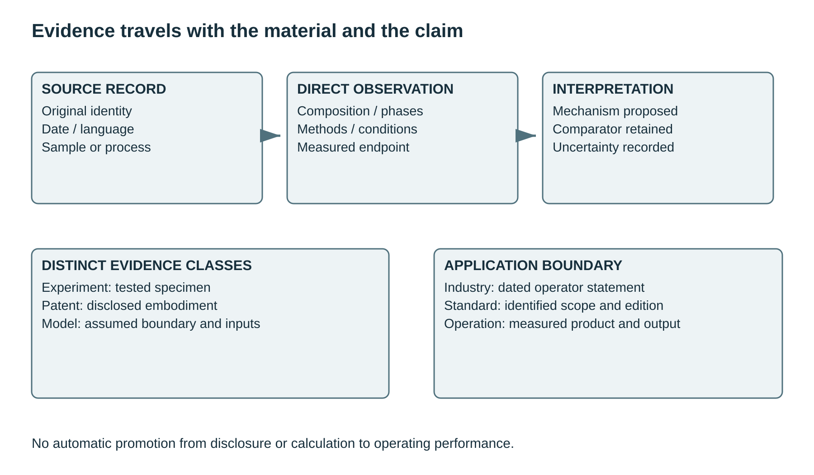

Basalt and Basalt-Derived Materials in Cement Manufacture and Cementitious Composites: A Global Literature Survey
Publication date:
Manuscript date: 19 October 2026
https://doi.org/10.5281/zenodo.23489459
Abstract
Basaltic materials occur in cementitious systems as raw-meal constituents, separated chemical feedstocks, mineral powders, aggregates, fibers and composite reinforcement. These uses are connected by geological origin but differ in phase assemblage, processing history, formulation and performance. This descriptive literature survey organizes scientific, technical, patent and industrial sources along the sequence provenance → chemistry and mineral phases → processing → functional role → observed properties. It covers conventional clinkering, silicate separation, mechanical and thermal activation, Portland-cement blends, alkali-activated binders, aggregate concretes, dispersed fibers, textiles and polymer-bound reinforcement. Experimental findings include both strength gains and losses, weak and measurable reactivity, and durability outcomes that depend on exposure and test method. Comparisons distinguish substitution of cement from substitution of sand, natural rock from synthetic basalt-composition glass, and laboratory observations from process models, patent disclosures and producer statements. Cross-sectional analysis addresses rheology, hydration, interfaces, characterization, material and energy accounting, historical terminology and specification pathways. The evidence supports formulation-specific descriptions rather than a single performance classification for basalt. Uneven full-text recovery, unresolved historical citations, differences among test conditions and limited independently documented operating data constrain comparisons. Original-language sources and unresolved bibliographic discrepancies are retained without assigning unsupported precision or implying exhaustive multilingual coverage.
Keywords: basalt, cement clinker, quarry fines, supplementary cementitious materials, alkali activation, mineral processing, concrete aggregates, basalt fibers, durability
1. Scope, terminology and evidence
1.1. The material family
The field considered here comprises basalt and basalt-derived materials used in cement manufacture and cementitious composites. It includes dense and vesicular rock, quarry and stone-processing residues, powders produced for controlled particle size, thermally modified or chemically activated material, synthetic glasses with basalt-like composition, separated calcium compounds, and melt-derived reinforcement. Basaltic pumice, scoria, diabase, gabbro and other volcanic materials enter the discussion when they clarify a particular mechanism or process. Their names are retained: a volcanic origin alone does not establish basalt composition, and a basalt-like bulk composition does not establish identical structure or reactivity.
Cement manufacture, binder formulation and composite manufacture represent different intervention points. A rock may supply silica, alumina, iron and some calcium to raw meal; its calcium may instead be separated and concentrated before clinkering. Ground material may replace part of the finished cement or part of the sand. Coarse rock forms a granular skeleton. Drawn filaments bridge cracks, while fibers embedded in a polymer become bars, strands or external reinforcement. Chemical reactivity is therefore an application-dependent property. Stability can be useful for aggregate or reinforcement, whereas dissolution is necessary when the material is intended to supply binding species.
The chemical perspective of Scheinherrová, Keppert and Černý [1] connects several of these forms, while the powder-focused review of Almeida et al. [2] maps a narrower experimental literature. Both are useful for locating original studies. Their inclusion criteria and conclusions are not adopted as a substitute for examining the underlying material and formulation. The present survey uses the broader classification in Table 2.
1.2. Working glossary
Table 1 distinguishes material names, processing terms and functional classifications used throughout the survey. These working definitions follow the cited terminology and geological accounts [45, 86, 87], with application-specific distinctions developed in the sections that follow. Historical spellings are retained in quotations and titles; material names do not substitute for measured composition or reactivity.
Table 1. Working glossary of related terms. Definitions guide interpretation; they do not certify a material against a product standard.
| Term | Working meaning | Distinction used in this survey |
|---|---|---|
| Pozzolan | Siliceous or aluminosiliceous material that, when sufficiently fine, reacts with calcium hydroxide and water at ordinary temperatures to form cementitious products [86]. | A functional classification, covering natural and manufactured materials. Volcanic origin or a favorable oxide analysis alone does not establish pozzolanic behavior. |
| Pozzolana | Historical name associated with volcanic material from the Pozzuoli region and, in broader usage, natural volcanic pozzolans [45]. | Here it identifies historical or natural volcanic material; “pozzolan” denotes the broader functional class. Original source usage is retained when the terms overlap. |
| Trass | Natural pozzolanic tuff, historically associated with deposits of the Rhine–Eifel region and used in ground form with lime or cement [45, 87]. | A geological and commercial material name within the natural-pozzolan family. It is neither a synonym for basalt nor evidence that every tuff is reactive. |
| Volcanic ash; tuff; historical “tufa” | Ash denotes fine fragmented volcanic ejecta; tuff is consolidated pyroclastic material [87]. Historical cement accounts sometimes call such material “tufa” [45]. | These names describe origin and physical form, not a fixed chemical composition. Historical “tufa” must not automatically be read as the modern carbonate-deposit term. |
| Basalt flour; quarry fines | Ground basalt or fine fractions generated during quarrying, crushing, washing or cutting. | Process and particle-size descriptions, without a universal size cutoff. Historical “flour” can include sand-sized particles [56]; neither name establishes cement replacement or reactivity. |
| Supplementary cementitious material (SCM) | Material used with hydraulic cement and contributing through hydraulic or pozzolanic reaction, sometimes alongside physical effects. | The role must be supported for the tested material. A powder investigated as a cement replacement is not necessarily a qualified SCM. |
| Filler | Fine mineral material whose described role is particle packing, nucleation or another predominantly physical effect. | “Filler” does not require perfect chemical inertness. Physical effects and limited reaction can coexist; dosage and the displaced constituent remain separate descriptors. |
| Hydraulic; pozzolanic | Hydraulic materials form water-resistant binding products through reaction with water. Pozzolanic reaction involves a reactive siliceous/aluminous material, calcium hydroxide and water. | Hydraulic hardening and pozzolanic activity are different mechanisms. A pozzolan alone need not harden with water; a lime–pozzolan mixture can form a water-resistant binder. |
| Clinker; cement; binder | Clinker is the kiln-produced intermediate. Portland cement is made by grinding clinker with calcium sulfate and permitted constituents. Binder denotes the binding fraction of a formulation. | Raw-meal substitution precedes clinkering; cement substitution follows it. “Binder” can also include blends and alternative systems; its mass denominator must be stated. |
| Mechanical; mechanochemical activation | Mechanical activation changes particle size, surface area or structural disorder. Mechanochemical activation entails chemical or structural change induced by mechanical energy. | Grinding can produce several effects at once. Finer particles or a longer milling time alone do not identify which transformation caused a measured response. |
| Alkali activation | Formation of binding products by reacting a precursor with an alkaline activator. | Distinct from adding basalt powder as filler to an already reactive system. Activation does not imply that all basalt in a blend has dissolved or become binding gel. |
| Alkali–silica reaction (ASR) | Reaction involving susceptible silica, alkalis and moisture that can generate expansive products and damage concrete. | Separate aggregate silica reactivity from alkali release: a constituent may supply alkalis without being the principal reactive silica source [51]. |
| Basalt fiber; BFRP | Basalt fiber is a melt-drawn filament. Basalt-fiber-reinforced polymer (BFRP) combines fibers with a polymer matrix as bars, sheets or other reinforcement. | Bare or sized chopped fibers in cement paste, cementitious textiles and polymer-bound reinforcement have different interfaces, test targets and durability boundaries. |
1.3. Descriptive survey and source boundaries
This is a descriptive literature survey, assembled through topic searches, native-language discovery and backward and forward citation tracing. Searches include English, Chinese, Russian, Portuguese, Polish, Turkish, German, Spanish, French, Japanese, Korean and Italian terminology. Retrieval is uneven across languages and source classes. No registered protocol, reproducible complete database export, comprehensive screening count or pooled effect estimate is asserted. References identified in later literature or authoritative bibliographic records may be included even when the original text could not be accessed. Such entries are explicitly marked. A bibliographic record establishes the reported identity and subject of a work; any account of findings obtained from another source is attributed to that source as a secondary report. Neither form implies that the original methods or results were examined.
Original experimental papers support observations under their specified conditions. Patents support statements about disclosed formulations and process sequences, not independent confirmation of performance or production. Standards describe test or specification frameworks; public catalog summaries do not provide the entire normative text. Process models depend on feed chemistry, recovery, energy and allocation assumptions. Government project records establish documented project actions; producer statements establish what an operator reported. This separation is especially important where a paper's abstract, a university news item and a commercial announcement use similar language for different stages of technical development.
Original titles and names are retained where available, with English translations for navigation. Publication dates are distinguished from priority, filing, defense and online-release dates. Conflicting records remain explicit. The scope does not require a claim of novelty, a policy motivation, a preferred technology or a ranking of commercial prospects.
Table 2. Material forms and functional roles. Classifications follow the material actually introduced, not the shared rock name.
| Material form | Processing / identity | Role in system | Interpretive boundary |
|---|---|---|---|
| Quarried basalt | Dense / vesicular / altered | Raw meal or aggregate | Source-specific phases |
| Quarry dust / sludge | Crushing, washing, collection | Cement or sand replacement | Specify denominator |
| Activated powder | Grinding, heat, reagents | Reactive addition / filler | Measure transformation |
| Synthetic basaltic glass | Engineered melt and quench | SCM or alkali precursor | Not untreated rock |
| Separated calcium | Leach, purify, precipitate | Clinker feedstock | Recovery and purity |
| Chopped fiber | Melt, draw, size, cut | Dispersed reinforcement | Dispersion and exposure |
| Textile / polymer bar | Bundle, weave or impregnate | Continuous reinforcement | Product and bond system |
![Four linked stages connect provenance (quarry or facies, dense or vesicular, altered or fresh), phases (crystals and glass, element inventory, surface chemistry), processing (crushing or grinding, melting or quenching, leaching or separation) and formulation (cement or sand, reactive precursor, aggregate or fiber). Intermediate observations of dissolution, packing, water demand, air and interfaces connect to measured flow, setting, strength, transport, chemical resistance, cracking and retained capacity. Arrows express conceptual organization, not universal causal magnitudes.](figures/figure1.svg)
Figure 1. Provenance-to-performance organization of basaltic materials. Original conceptual diagram; intermediate observations distinguish mechanisms from composite endpoints.
2. Geological provenance, chemistry and mineral phases
2.1. Source rock and processing stream
A useful description starts with a sample rather than a nominal material name. Geological unit, quarry location, lava facies, degree of alteration, vesicularity, mineral proportions and glass content establish the starting material. Subsequent production separates fractions with different properties: intact blocks, crushed aggregate, screening fines, washing sludge and dust captured during asphalt-aggregate production. An experimental powder collected from a dedusting system need not represent the average chemistry or particle-size distribution of the original quarry face. Likewise, rejects selected for porosity cannot be assumed to behave like dense coarse aggregate.
Korkanç and Tuğrul [3] examined eleven basalt types from the Niğde region, relating petrography and composition to physical and mechanical properties and aggregate suitability. The variation within this regional population is more informative than treating basalt as a uniform engineering substance. Their later alkali-reactivity investigation [4] linked potentially deleterious behavior to the character of the matrix and volcanic glass. These studies distinguish aggregate quality from bulk rock classification; a specimen can satisfy one physical criterion while requiring separate assessment of chemical expansion.
The quarry-residue inventory of Toscan, Kautzmann and Sabedot [5] documents extraction and finishing streams in Nova Prata, Brazil. It differentiates overburden, altered rock, intact rock rejected by production geometry, and clean finishing offcuts. Those categories have different preparation and contamination histories. Their existence does not establish a uniform cement feedstock or a generally applicable waste fraction. Regional production surveys describe a particular operation and period; laboratory samples require their own provenance record.
2.2. Bulk oxides and reactive phases
Basaltic rocks commonly contain plagioclase, pyroxene and variable amounts of olivine, iron-bearing phases and glass. For a cement application, total oxide analysis and phase analysis answer different questions. X-ray fluorescence reports elemental inventory expressed as oxides; diffraction and petrography identify how that inventory is partitioned. Calcium in plagioclase is not free lime, and silica in a crystalline silicate is not equivalent to readily dissolving amorphous silica. Alteration products, secondary carbonate and clay can change both apparent composition and water demand.
Yu, Zhou and Dong [6] proposed a pozzolanic activity component that combines chemical composition and amorphous-phase content, examining basalt and pumice with chemical, petrographic, diffraction and mortar-strength measurements. It is an attempt to describe intrinsic potential separately from particle size. Its use does not remove the need to report the method used to determine amorphous content, the composition of that fraction, or the conditions under which it reacts. A large sum of silica, alumina and iron oxides is not a direct measurement of the dissolving fraction.
A notable source-specific discrepancy appears in Li et al. [7]: their reported powder chemistry includes 0.81% CaO and 33.08% Al₂O₃. These values should not be substituted for typical mafic-rock composition. The paper remains evidence for the tested powder and paste, but interpretation across basalt deposits requires caution. This example also illustrates why a review should preserve reported numbers while avoiding an unverified correction to the rock name or the analytical table.
Table 3 separates the material descriptors needed for different uses. For clinker raw meal, the oxide inventory and burnability are central; for calcium extraction, accessible calcium and impurity behavior matter; for a powder blend, phase dissolution, particle geometry and surface chemistry matter; for aggregate, texture and deleterious constituents matter; and for fiber, melt composition, sizing and flaw population matter. The descriptions overlap but are not interchangeable.
Table 3. Feedstock descriptors needed to interpret different applications. This is a reporting map, not a numerical composition standard.
| Descriptor | Direct measurement | Application relevance | Common ambiguity |
|---|---|---|---|
| Provenance / facies | Quarry log, petrography | All roles | Trade name replaces geology |
| Oxide inventory | XRF / chemical analysis | Raw meal, extraction | Total oxide ≠ reactive oxide |
| Mineral and glass fractions | Petrography, QXRD | Dissolution, ASR, melt | Peak height ≠ glass fraction |
| Size / surface / shape | PSD, BET, Blaine, images | Powder rheology / activation | Different surface methods |
| Porosity / absorption | Density and water uptake | Aggregate / vesicular rock | Dry vs saturated batching |
| Sizing / fiber geometry | Product analysis, microscopy | Reinforcement / bond | Filament ≠ composite bar |
3. Quarrying, comminution and activation
3.1. Crushing, classification and grinding
Comminution creates both the desired product and a population of fines. Crusher arrangement, screening, washing, drying and collection determine particle shape and the size range delivered to a cement or concrete process. A quarry dust used directly as a fine-aggregate fraction is different from material ground below the cement particle size. Classification can alter chemistry if minerals break or report to size fractions differently. Moisture and clay contamination can influence handling and admixture response independently of the nominal basalt content.
Particle-size distributions should be reported with the measurement and dispersion procedure. Laser diffraction observes an equivalent-size distribution that can include agglomerates; sieving measures retained fractions at selected openings; microscopy describes shape; Blaine and BET methods measure different aspects of surface area. None is a universal substitute for the others. Comparing two studies only through a single average size can conceal broad distributions, ultrafine tails or agglomeration. A grinding-time comparison is incomplete without mill type, loading and delivered power.
3.2. Thermal modification and synthetic glasses
Wang and Suraneni [8] investigated thermal treatment of basaltic fines and mixtures with fly ash or limestone, using diffraction, infrared spectroscopy, microscopy and a modified R³ reactivity test. Their study describes progressive structural change with heating and material melting at the higher tested temperatures. The relevant comparison is between characterized raw and thermally transformed powders. Heating a crystalline silicate is not equivalent to activating a clay by dehydroxylation; the extent of melting and the cooling history determine what subsequently reacts.
Alzeer, Cheeseman and Kinnunen [9] studied synthetic aluminosilicate glasses derived from basalt composition as additions to Portland cement. Their glass-containing pastes exhibited faster hydration and higher strength than the tested slag-containing comparison. These are results for manufactured glass compositions, not evidence that an arbitrary quarry powder has the same behavior. Natural-rock remelting adds compositional variation and process operations that must be described before the synthetic-glass result is transferred to an industrial feed.
Thermal processing links the powder and fiber literatures through melt structure and cooling, but the products serve different functions. A glass powder intended to dissolve, a stable filament intended to retain tensile strength and a remelted aggregate intended to maintain shape cannot share a single activation criterion. Table 4 therefore records processing by transformation and product, rather than by an assumed universal progression from inactive to active basalt.
3.3. Mechanical and chemical activation
Amroun, Galli, Tahlaiti and Suraneni [10] examined mechanochemical activation of basaltic fines, varying grinding time and ball-to-powder ratio and measuring particle characteristics, crystallinity and modified-R³ reactivity. This work treats grinding as a structural treatment as well as size reduction. Milling can increase defect density and accessible surface, but the powder can also agglomerate. Consequently, an increase in measured particle size need not imply a decrease in accessible area, and an apparent loss of diffraction intensity requires an appropriate quantitative interpretation.
Patent CN102503191A [11] discloses activated basalt powder with specified sieve residue and surface-area ranges, including routes that combine grinding with chemical or thermal treatment. The optional grinding aid is part of the formulation and cannot be ignored when assigning an effect to basalt. Patent RU2212383C2, «Безобжиговое вяжущее» [12], describes a clinker–gypsum binder containing wet-ground basalt. The title's “unfired” terminology does not mean that the formulation contains no previously fired clinker. Both are process disclosures rather than independently replicated activation studies.
Ke, Shen and Yang [13] provide an adjacent separation example: acid pretreatment and alkali-fusion-assisted hydrothermal processing of waste basalt powder for X-zeolite synthesis. Their experiments show that reagent ratio and crystallization conditions affect the recovered phase. The result is relevant to extracting and reorganizing aluminosilicate species, but zeolite synthesis is not itself evidence of cement strength or cement specification compliance. A chemical pretreatment can change phase selectivity as well as increase dissolution.
Smith, Hollingham and Gevaudan [14] examine aqueous mechanochemical activation in a one-hour attrition-milling experiment coupled to discrete-element and response-surface models. The reactivity response is bound water and corresponding seven-day R³ heat release; it is distinct from the electrical energy consumed by the mill. The apparatus uses a stationary tank, rotating agitator, grinding media, cooling jacket and controlled gas supply. The laboratory experiments and computational optimization describe different evidence levels. Neither establishes the throughput, residence-time distribution or auxiliary-energy demand of a continuous production plant.
Hollingham and Gevaudan's related paper [83] reports agglomeration during aqueous milling alongside increased BET surface area and reduced crystalline peak intensity. A larger measured agglomerate size can therefore coexist with a larger accessible surface. The indexed original text also distinguishes carbonate formed later in retained liquid from carbonate in recovered basalt solids. These observations concern different streams and characterization methods; they should not be merged into one conversion yield. The supplementary file remains unrecovered.
Table 4. Processing routes and evidence boundaries. Patent entries describe disclosures; studies describe their tested materials.
| Route | Example | Observed / disclosed transformation | Comparison requirement |
|---|---|---|---|
| Thermal treatment | Wang & Suraneni [8] | Melting / amorphization; R³ response | Temperature, hold, cooling |
| Synthetic glass | Alzeer et al. [9, 26] | Engineered glass; binder tests | Composition and synthesis inputs |
| Mechanochemical | Amroun et al. [10] | Size, crystallinity and reactivity | Mill loading, energy, dispersion |
| Combined activation | CN102503191A [11] | Grinding aid / thermal routes | Patent; constituents retained |
| Wet grinding | RU2212383C2 [12] | Basalt–clinker–gypsum blend | Patent; fired clinker retained |
| Alkali fusion / hydrothermal | Ke et al. [13] | Soluble species and X-zeolite | Adjacent separation, not concrete |
| Aqueous attrition | Smith et al. [14] | Joint activation / mineralization | Electricity / R³ heat; model range |
4. Basalt in Portland raw meal and clinker manufacture
4.1. Aluminosilicate substitution
Basalt can enter conventional clinkering as a source of several oxides while limestone remains the principal calcium source. Hassaan [15] compared raw mixes containing 87 wt% limestone, 12 wt% clay or basalt and 1 wt% corrective material. The clay mixture received iron oxide; the basalt mixture received sand. The mixes were fired at 1500 °C for two hours, cooled and ground before paste testing. This is an experiment in aluminosilicate substitution and corrective balancing. It does not demonstrate the direct replacement of all limestone by untreated basalt.
Andrade et al. [16] studied quarry fines and vesicular basalt in raw mixes, adjusting limestone, clay and iron ore to comparable chemical moduli. Their additions ranged from 1 to 10 wt%. Optical point counting, diffraction and free-lime analysis were used to characterize the resulting clinkers. The study found major phase proportions within the range of conventional industrial clinker. The investigated route retained the conventional raw-meal chemistry problem: a basalt-bearing mixture must be balanced as a whole rather than evaluated by the identity of one added constituent.
4.2. Phase formation and test interpretation
A raw-meal comparison requires oxide balances and thermal history together. Similar lime saturation and silica and alumina moduli can coexist with different mineral grain sizes, reaction paths, liquid-phase behavior and cooling response. Free lime, alite and belite abundance, interstitial phases and periclase should be considered alongside the final cement's fineness and sulfate addition. A clinker phase result alone is not a complete cement performance result, and a paste-strength result cannot identify which raw-meal change caused the difference without appropriate controls.
For quarry residues, alkalis, magnesium, sulfur, chlorides and trace constituents belong in the feed description even where the principal oxide balance is acceptable. Their significance depends on concentration and process circulation. The limited laboratory raw-meal studies do not establish the long-term variability of a quarry supply, kiln coating behavior or plant-scale emissions and maintenance requirements. Table 5 places direct raw-meal substitution beside calcium separation precisely to prevent their experimental and engineering boundaries from being merged.
5. Calcium separation and mineral-processing routes
5.1. Concentration rather than direct kiln substitution
Producing calcium-rich clinker from a lower-calcium silicate requires separation or another means of concentrating calcium relative to the remaining rock. A generic process can contain grinding, selective leaching, solid–liquid separation, impurity removal, precipitation, washing, reagent recovery and thermal conversion. Each step changes the identity and composition of the product. Recovery should therefore be defined for a specific element and stream; a dissolved-calcium yield is not automatically a yield of qualified clinker or cement.
The patent family represented by US11718558B2 [17] discloses acid treatment of calcium-bearing starting materials, separation of calcium salts and other fractions, and further treatment toward calcium oxide and cement products. HCl/sulfate embodiments and metal-bearing byproduct routes are described. The disclosure spans alternatives rather than one independently verified operating flowsheet. A patent equation or example is retained as a disclosed embodiment, and neither its existence nor related foreign publications establish actual production performance.
Prancevic et al. [18] distinguish thermodynamic limits from a baseline process using acid leaching, calcium-hydroxide precipitation, acid/base regeneration and clinkering. Their illustrative baseline is 6.2 GJ per tonne of Portland cement; the reported 30% reduction compares combined cement-plus-SCM output with separately produced comparators. It is not a measured cement-only plant efficiency. Nor should this modeled electrochemical route be silently identified with the sulfate-based patent embodiment. Product allocation and coproduct qualification are consequential parts of the comparison.
5.2. Separation products and unresolved engineering quantities
Silicate digestion can produce soluble calcium together with sodium, magnesium, aluminum and iron, plus a silicon-rich solid or gel. Selectivity depends on mineral distribution and solution conditions. A residue called silica or aluminosilicate can contain unreacted rock, precipitated material, retained solution and salts. Its use as an SCM therefore requires separate characterization. The chemistry of a separated residue is not the chemistry of the starting powder, and a material balance must keep washed dry solids distinct from wet filter cake.
Reagent regeneration closes an elemental loop only if the actual salts and losses are included. Acid retained in solids, wash-water dilution, purge streams, impurity precipitation and gas handling can alter both makeup demand and energy. Similarly, recovering a metal-bearing solid is different from producing a saleable metal, oxide or standardized mineral addition. For each proposed coproduct, composition, physical form, specification and destination define the relevant product boundary.
The laboratory evidence, patent disclosures and public project documentation do not provide a complete, independently measured balance for a long-running basalt refinery. The survey therefore describes process architecture and explicit calculations without assigning a universal recovery, cost or energy intensity. Section 13 develops transparent accounting identities and illustrative stoichiometry that can be used to compare future measured cases without inventing missing plant data.
Table 5. Three clinker-related routes that require separate balances. Laboratory firing and modeled flowsheets do not establish plant operating performance.
| Route / source | Feed or sequence | Evidence | Boundary |
|---|---|---|---|
| Basalt for clay [15] | 87% limestone, 12% basalt, 1% sand; 1500 °C, 2 h | Laboratory clinker/paste | Carbonate calcium retained |
| Basalt residues [16] | 1–10% fines or vesicular rock; other feeds adjusted | Laboratory clinker phases | Raw-meal oxide balancing |
| Separated calcium [17] | Two-acid treatment, salts, thermal conversion | Patent disclosure | Alternative embodiments |
| Separated calcium [18] | Leach, hydroxide precipitation, regeneration, clinker | Thermodynamic/process model | Cement-only vs product basket |
6. Basalt powders in Portland-cement systems
6.1. Replacement basis and formulation
Powder studies are interpretable only after specifying what was displaced. Cement replacement reduces the mass of the original binder. Sand replacement changes the granular skeleton and paste-to-aggregate relationship. Addition at constant cement increases total solids, while replacement of limestone, fly ash or slag changes a different reference system. Mass replacement and equal-volume replacement also produce different solid volumes when densities differ. Accordingly, a nominal 10% basalt mixture is not a reproducible formulation until the denominator, water content and other constituents are identified.
At constant water-to-total-binder ratio, an unreactive replacement raises the water available per mass of remaining cement. For example, replacing 20% of cement with powder at water/total-powder = 0.40 gives water/remaining-cement = 0.50. This is an arithmetic description, not a prediction of strength: packing, air, adsorption and reaction can also change. Reports using “water/cement” ambiguously should be interpreted through the mixture table. Water demand, superplasticizer dosage and entrained air are especially important when a strength comparison uses equal slump rather than equal water.
6.2. Cement replacement: positive, negative and age-dependent observations
Liu et al. [19] reported potential pozzolanic activity for a Sichuan basalt powder, increased normal-consistency demand and retardation of setting and hydration heat. Early paste strengths were lower than those of the cement reference, approaching them at later ages. The result is consistent with a time-dependent balance among dilution, physical effects and reaction, but it does not assign a universal reaction rate to basalt. The fineness and mineralogy of another powder can change that balance.
Akyüncü and Cihan's study, «Bazalt tozu katkılı harçların mekanik ve geçirimlilik özeliklerinin araştırılması» [20], investigated 0–20% cement replacement in mortars. The abstract reports an approximately 8% compressive-strength gain at 10% replacement and reduced pressure-water penetration for that series. Dobiszewska and Beycioğlu [21] examined smaller cement-replacement increments in four cement types, likewise reporting strength improvements in the tested mortars. These are formulation-specific outcomes. They cannot define a single optimum across cement types, ages and exposure methods.
Altuncı and Gençer [67] give a contrasting pressure-water result in concrete. CEM I 42.5 R was replaced at 0–20%, with reported w/b = 0.52 and 28-day water curing. At 20%, they report 8.17% lower compressive strength and 19.29% greater pressure-water penetration depth than the control. This differs from the favorable 10% mortar result in [20], but the powders and formulations are not matched. Within [67], density reduction is also reported inconsistently: 1.98% in the summary and 4.05% in the detailed conclusion. That disagreement is retained rather than selecting one value to classify the concrete.
Meinhart et al. [22] provide a contrasting experiment: replacement levels of 0–25% were tested through 180 days. The filler satisfied the chemical requirements evaluated but showed low lime activity; the 25% mixture's 180-day strength was 41.8% below the reference. The combination of chemical eligibility and poor measured activity is important. Passing an oxide-composition criterion does not demonstrate reaction or equivalent mortar strength.
Li et al. [7] studied 20% replacement at reported w/b = 0.40. Their measured strength reductions included 24.6% at 28 days and 21.7% at 96 days. They associated the behavior with dilution, weak powder–hydrate interfaces and limited reaction. Table 6 juxtaposes these results with positive mortar observations without averaging them. A pooled percentage would conceal changes in powder composition, cement, mixture design and test age.
Guerra's dissertation [50] provides a lower-dose example with a narrower test window. Quarry residue from Londrina, Paraná, was classified into fine and coarser fractions and incorporated into CP-V ARI cement. At seven days, mortar cylinders containing 2.5% fine-basalt replacement reached 41.5 MPa, compared with 39.8 MPa for the reference; the thesis gives the increase as approximately 4.3% (Tables 14–15). The 2.5% value identifies the replacement dosage, not the strength gain. Fine material around 1–10 µm performed differently from the coarser fraction. The 5% fine-residue series was close to the reference, while larger tested replacements reduced strength.
The same dissertation interprets particle packing and nucleation on basalt grains using particle-size distributions and electron microscopy. The microscopy paste contained more residue than the strongest mortar formulation to make grains easier to observe. Its images therefore illustrate possible interfacial processes without directly measuring the reaction extent in the 2.5% mortar. The seven-day result does not establish a later-age optimum, a durability benefit or a dosage applicable to other quarry fines.
Quile Lagua's thesis [71] illustrates the distinction between a design target and a control comparison. The original tables report 266.60 kgf/cm² at 28 days for a mixture containing 10% recycled fine aggregate and 5% basalt powder, above the 210 kgf/cm² design target but below the 318.72 kgf/cm² natural-aggregate control. Thus meeting the target is not strength equivalence. The tabulated records provide limited information on replication and have inconsistent force/mass column labels; no statistical superiority or isolated basalt effect is inferred.
6.3. Sand replacement and interfacial effects
Dobiszewska and Beycioğlu [23] used waste powder from mineral–asphalt aggregate production to replace 10%, 20% and 30% of sand by mass at water/cement = 0.40. Their powder had a reported mean particle size of 20 µm and a broad distribution. The study describes reduced water transport and porosity and strength improvements in the investigated concrete. The reference binder inventory was not reduced in the manner of a cement-replacement experiment. Its interpretation therefore concerns packing, interfaces and composite structure as well as any chemical contribution.
The paper «Zastosowanie pyłu bazaltowego, jako substytutu piasku w zaprawie i betonie cementowym» [24] similarly places basalt dust in the fine-aggregate fraction. Its conclusions should retain the mortar or concrete boundary, rather than being restated as proof of a standardized blended cement.
A denser interfacial zone can arise from changed particle packing, a reduction of locally large voids, different bleeding or altered hydrate deposition. Microscopy can show the resulting morphology but does not uniquely identify its cause. A powder particle can contribute physically without extensive reaction. Conversely, reaction observed in an accelerated chemical test may not contribute enough hydrate at the tested age to compensate for binder dilution. Both statements can be true for different endpoints in the same mixture.
Table 6. Selected original powder experiments. Outcomes retain their substitution basis; rows are not suitable for a pooled effect calculation.
| Source / specimen | Replacement basis | Reported observation | Limit on comparison |
|---|---|---|---|
| Liu et al. [19]; paste | Cement / basalt blend | Early retardation; later strength approaches reference | Specific Sichuan powder |
| Akyüncü & Cihan [20]; mortar | 0–20% cement | ~8% compressive gain at 10%; penetration response | Abstract-level numeric record |
| Meinhart et al. [22]; mortar | 0–25% cement | 25%: −41.8% strength at 180 d | Low lime activity |
| Li et al. [7]; paste | 20% cement; w/b 0.40 | −24.6% at 28 d; −21.7% at 96 d | Atypical reported XRF |
| Dobiszewska & Beycioğlu [23]; concrete | 10–30% sand by mass | Reduced water transport; strength gain | Cement inventory retained |
| Ponzi et al. [25]; well paste | 0.25–5 wt% addition | Favorable low-dose CO₂-exposure behavior | Class G; specialized exposure |
6.4. Sulfate balance, cement type and admixtures
The same powder can interact differently with a cement rich in clinker, a fly-ash cement or a slag-containing cement. Total sulfate, alkalis and reactive aluminate inventory influence setting and phase development. A powder introduced by intergrinding can also alter the size distribution of the original cement. These variables make cement identity and grinding sequence part of the experimental treatment. They are not merely background descriptors.
Polycarboxylate demand, loss of slump, yield stress and air content should be distinguished from an isolated flow-spread value. If water is added to recover flow, the hardened comparison changes; if admixture is increased, adsorption and retardation may change. These are legitimate formulation choices, but the observed response belongs to the resulting formulation. Attributing all of it to pozzolanic activity or all of it to filler packing is stronger than the measurement alone permits.
7. Alternative and alkali-activated binders
7.1. Natural powder, reactive blends and synthetic glass
Alkali activation encompasses several material systems. Basalt can be the intended precursor, a partial replacement of slag or fly ash, a fine aggregate, or a source for a manufactured glass. Activator composition, silicate modulus, hydroxide concentration, liquid-to-solid ratio, temperature and moisture history govern dissolution and precipitation. The term “geopolymer” does not establish that most of the basalt has reacted, nor does the presence of a hardened body identify a particular gel assemblage.
Patent CN102674782A/B [77] discloses a cement-containing blend of separately ground basalt, slag and limestone powders, with an alkaline activator dissolved in mixing water. The formulation combines reactive and less-reactive constituents rather than demonstrating that basalt alone becomes the binding phase. Its A and B publications belong to one application family. The disclosed strength and durability remain properties claimed for the whole formulation.
Alzeer, Nguyen, Cheeseman and Kinnunen [26] activated synthetic basalt-composition glass with 10 M NaOH at liquid/solid = 0.40, using an initial 40 °C cure. Strength reached approximately 90 MPa after seven days in their small paste specimens. The paper describes aluminosilicate reaction products and compares the glass with slag. These conditions and the engineered glass structure are integral to the result; it cannot be transferred to untreated crystalline basalt or to ambient-cured structural concrete.
Gheller et al. [74] instead activated natural crushing-residue basalt below 53 µm using sodium hydroxide and sodium silicate. Activator variables were combined with 24-hour thermal curing at 75–125°C and storage to 28 days. For H5S15T125, the abstract reports approximately 10.2 MPa; the body identifies two experimental rounds with different strengths. Higher curing temperatures increased both strength and reconstructed pore content. This combination does not support a simple inverse relationship between total porosity and strength across all activated basalts. The precursor and curing also differ from the synthetic-glass experiments [26]; their strength difference is not an isolated measure of glass content.
Rashad et al. [27] examined Egyptian basalt powder as a partial replacement of slag in alkali-activated pastes, comparing air and water curing. Their results identify an intermediate formulation with favorable performance and reductions at higher replacement, with water curing performing better under the investigated conditions. The proposed coexistence of gel types is an interpretation of the characterization. Increasing residual crystalline basalt peaks with dosage must be distinguished from direct quantification of newly formed binding gel.
Tammam, Uysal and Canpolat [28] studied quarry powders as fillers in fly-ash-based geopolymer mortars, including elevated-temperature and abrasion-related measurements. Tammam et al. [29] extended filler and recycled-aggregate combinations. The role of basalt in these experiments differs from that of a sole reactive precursor. When sand is displaced by powder, an improvement can occur through packing or aggregate–paste interactions even if the primary binder is supplied by fly ash and slag.
7.2. Phase identity and curing
N-A-S-H denotes sodium aluminosilicate hydrate; C-(A)-S-H denotes calcium-containing silicate hydrate with variable aluminum substitution. Mixed systems can contain more than one poorly crystalline product. Assigning these labels from a broad diffraction hump alone is not a quantitative phase balance. Infrared spectra, elemental maps, thermogravimetry and, where available, solid-state spectroscopy give complementary information. Residual activator and soluble salts also affect short-term properties.
Water curing can sustain reaction, remove soluble species or alter microcracking, depending on the binder. Air curing changes drying and carbonation as well as reaction. An accelerated hot cure can transform a material that reacts slowly at room temperature, while creating a different pore structure or shrinkage history. Comparisons therefore retain the actual curing sequence and specimen geometry. Strength after heat curing is not an ambient-cure result, and immersion stability is not established by strength measured only before immersion.
For a basalt-containing alternative binder, useful comparisons distinguish the amount of original reactive precursor displaced from the basalt-containing fraction actually dissolved. This is particularly important in high-calcium blends, where reducing slag can reduce rapidly available calcium. A filler-rich formulation can gain packing efficiency at one dosage and lose reactive volume at another. The evidence in Table 7 is consistent with conditional optima rather than a universal basalt fraction.
Table 7. Basalt-containing alternative binders. A filler, a partial precursor replacement and synthetic glass have different reaction inventories.
| System | Material role | Conditions / endpoint | Evidence boundary |
|---|---|---|---|
| Synthetic glass [26] | Alkali-reactive precursor | 10 M NaOH; L/S 0.40; initial 40 °C; ~90 MPa at 7 d | Small glass-paste specimens |
| Slag / basalt [27] | Partial slag replacement | Air vs water curing; dosage-dependent properties | Reported gel interpretation |
| Fly-ash geopolymer [28] | Quarry-powder filler | Strength, abrasion, heat exposure | Other powders / binder present |
| Recycled-aggregate geopolymer [29] | Filler in mixed system | Physical, mechanical, freeze–thaw | Multicomponent effects |
8. Aggregates and specialized cementitious products
8.1. Dense aggregate and vesicular material
Coarse basalt aggregate transfers load through the granular skeleton and its interface with paste. Its elastic response, crushing resistance, absorption, shape and thermal behavior are relevant independently of any pozzolanic activity. Vesicular basalt and scoria introduce a different pore and moisture regime. “Basalt aggregate” should therefore identify density and absorption as well as nominal size. Concrete comparisons need both aggregate volume and grading; equal aggregate mass does not guarantee equal paste volume.
The regional petrographic investigations [3, 4] show why a quarry-specific assessment is necessary. In dense concrete, particle strength alone does not determine the limiting failure path: paste strength, interface quality and aggregate stiffness interact. In pervious concrete, connected void geometry and contact bonding become more prominent. For lightweight or porous products, absorption and preconditioning change the water available to paste. Results across these systems should not be reduced to a single aggregate-quality score.
The studies [81, 82] compare rocks, crushed aggregates and their concretes. Piasta and Góra [81] found aggregate-type effects on splitting tensile strength among concretes within a similar compressive class; dolomite gave higher splitting strength than the tested basalt and granite. Piasta, Budzyński and Góra [82] related high-performance-concrete behavior to rock stiffness, tensile strength, aggregate crushing resistance and the interface. These studies do not rank all rocks of those names. They show why compressive rock strength alone cannot represent the concrete's complete mechanical response.
Jeju Island studies add a resource stream in which aggregate porosity and adhered old mortar both matter. Choi et al. [54] examined basalt-based recycled aggregate with absorption around 3–5%, using water ratio, recycled-aggregate type and replacement fraction as mix-design variables. The absorption limit discussed in the study was difficult to reach for the porous recycled material. That observation concerns the tested recycled-aggregate population and does not describe all basalt from Jeju Island.
Choi and Park [55] subsequently compared basalt aggregate, untreated recycled aggregate and improved recycled aggregate under different curing and fly-ash conditions. Quality improvement and curing changed modulus, shrinkage and freeze–thaw response as well as strength. For example, the reported improved-aggregate concrete reached an elastic modulus of 22.9 GPa, and the study found a favorable freeze–thaw response in its 25% fly-ash condition. Aggregate treatment, spherical particle content, air-void spacing and binder changes occur together in this program. The Taguchi mix designs sample combinations of factors; the results should not be interpreted as a complete independent-factor experiment or as an effect of basalt chemistry alone.
A quarry-specific comparison by 李光伟 and 杨元慧 [95] examined manufactured aggregates for the Xiluodu Hydropower Station. The source identifies the basalt as Emeishan basalt and the limestone as Maokou Formation material. Jaw crushing produced the aggregates, with fine material prepared in an overflow rod mill. A modified Los Angeles-type test compared all-basalt, all-limestone and basalt-coarse/limestone-fine combinations over 1,000 revolutions; the reported wear losses were 10.2%, 33.5% and 19.0%, respectively. Because the procedure was modified for mixed lithologies, these results retain their experimental grading and method boundaries.
The corresponding concrete data [95, Table 9] distinguish strength from hydraulic-abrasion resistance. At reported w/b = 0.45, all-basalt, mixed and all-limestone concretes reached 90-day compression of 44.9, 45.9 and 41.7 MPa, while their abrasion resistances were 0.929, 0.591 and 0.499 h/(kg/m²). The mixed-aggregate formulation thus had slightly higher compression than the all-basalt formulation but lower abrasion resistance. Reported binder quantities also differed, at 235.6, 229 and 218 kg/m³, so the comparison does not isolate lithology alone. The study documents material testing and selection for the project; its recommendation for wear-exposed concrete is distinct from a record of subsequent service performance.
8.2. Temperature and specialized exposure
井田宥文, Amr Meawad, 栗原諒 and 丸山一平 [34] investigated aggregates and mortars above 1000 °C. Their article reports melting of basalt and andesite near 1150 °C under the tested conditions, with the examined rocks melting by 1200 °C, while the cement paste did not show the same melting response. Rock–paste interaction and cement alkalis influenced mortar behavior. These high-temperature observations describe that experimental heating regime, not routine fire-design resistance.
Tiegoum Wembe's doctoral thesis [35] compares concretes containing basalt and gneiss aggregates from Cameroon at equal paste volume. Rapid heating–cooling at 10°C/min and slower residual-property cycles at 1°C/min address different responses. Gneiss-containing specimens spalled during the rapid test at surface temperatures approximately 300–550°C, whereas no spalling was observed during the slower cycles. In the slow-cycle series, the basalt-aggregate concrete B-SB-GB had reported compressive strengths of 36.6 MPa initially and 13.2 MPa after the 600°C cycle (Table 3.14, p. 116). The gneiss-aggregate formulation B-SG-GG gained strength at 150 and 300°C before declining at higher temperature. These are residual values after the specified treatment, not hot-state design strengths.
The complete thesis also contains an unresolved numerical inconsistency. Its abstract assigns thermal-expansion coefficients to basalt and gneiss in the opposite order from the chapter 3 discussion and conclusion. The main text additionally compares coefficients at different temperatures, while dilatometry was conducted separately at 4°C/min to 1050°C on small specimens. Selecting one pair as ambient material constants would conceal both the assignment conflict and the temperature dependence. The qualitative thermal observations and the separately identified residual-strength table can be described without resolving the disputed coefficients by inference.
Alves's dissertation [85] examines 1:3 mortars heated to 150, 300, 600 and 900°C and cooled in staged or abrupt regimes. Microscopy, microtomography, thermogravimetry, residual compression and dynamic modulus were combined. The author's analysis found no general statistically significant preservation of residual mechanical properties from the tested basalt fines. Table 3.4 lists 70 kg/m³ powder, 420 kg/m³ cement and 1375 kg/m³ sand against a reference with 466 kg/m³ cement and 1398 kg/m³ sand, at the same 233 L/m³ water. Both cement and sand changed; the nominal 15% label should not be recast as a simple 15% cement replacement. The severe 900°C/quench treatment produced disintegration. This result concerns its mortar and cooling protocol, separately from aggregate concrete [35].
Rumiński and Szeląg [80] combine thermal exposure of basalt-powder cement pastes with a porosity model and an associated RepOD dataset [72]. Seven mixtures contain 0–50% powder, with water curing, controlled drying, furnace heating and natural cooling. The mass table fixes water at 480 g while replacing part of an approximately 1370 g powder inventory; it therefore represents nearly constant water/total-powder ratio, although the text calls w/c constant. MIP and model calibration use selected formulations and temperatures rather than every specimen in the broader program. The reported error of about 2.2 porosity percentage points describes that fitted dataset, not independent validation across other basalt sources, concretes or fire histories.
Ponzi et al. [25] examined basalt powder additions to API class G cement under a defined high-pressure chemical exposure. The powder was obtained by milling coarse basalt for 60 h and using the fraction passing a 325-mesh sieve. Water was fixed at 0.44 times the dry cement mass, without compensation for added powder: water/total-solids therefore fell from 0.440 in neat cement to 0.419 at 5% powder. This is an addition series, not a simple equal-mass cement-replacement experiment. Specimens were cured for 14 days at 65°C and atmospheric pressure, then exposed for seven days to supercritical CO₂ and deionized water at 65°C and 15 MPa. Carbonated volume, microscopy, microtomography and compression were examined. Low contents, especially 0.25 wt%, limited the altered region more effectively than higher contents in this series despite the powder's large inert fraction and low pozzolanic activity. The exposure establishes a short-duration response in the specified wet chemical system; it does not determine long-term well integrity, bond to casing or rock, or behavior under continuously renewed fluid flow.
8.3. Paving, repair, printing and pressed products
Manufactured blocks, repair mortars, pressed panels, roof products, railway sleepers and printable mixtures introduce process-specific requirements. Compaction can determine density in a low-slump paving mix; extrusion requires a balance between flow, structural buildup and layer stability; repair materials require compatibility and adhesion; a well cement requires performance under temperature, pressure and chemical exposure. A strength result alone cannot qualify all of these uses.
Patent KR100754910B1 [39], «폐 석재를 이용한 콘크리트 보도블록 및 그 제조방법», discloses waste-stone paving blocks with separate layers and a multicomponent formulation that includes porous basalt powder. Patent DE10111016A1 [40], «Stoffmischung zur Herstellung von Leichtbeton», discloses a lightweight-concrete mixture containing basalt flour. These records document product architectures. They do not isolate the contribution of basalt from pigments, polymers, other mineral additions or compaction.
The original publisher abstract of Daungwilailuk and Pansuk [61] reports cement replacement with basalt powder in 3D-printed concrete. Up to 5% replacement retained the evaluated mortar flow, setting and compressive behavior, and a printed wall was compared with a control wall. The full printing and structural-test methods were not recovered. The report therefore supports a source-specific example of printing trials, while layer geometry, printing rate, loading arrangement, direction-dependent strength and repeatability remain necessary for a detailed product comparison.
Silva et al. [62] studied pressed cement plates with basalt powder replacing sand. A later full account by the same author group [93] contains matching formulation labels and key outcomes; these records are treated as related reporting of one experimental program. The full account uses CP II-Z cement and 13.94% cement in the dry solids, with a cement:aggregate mass ratio of 1:6.17. Formulations C1, C2 and C3 contain 86.06%, 70% and 50% basalt in the dry solids, respectively. Thus C3's 58.1% sand replacement is 50/86.06, not 58.1% of total solids or cement. Pressures of 25.5 and 30.5 MPa and basalt fractions were varied in a two-factor design with a replicated center condition. The selected pressed plates used 5% added water; molded references used 15% and a different sand grading. These are combined processing and formulation comparisons.
At 28 days, the full account reports flexural strengths of 2.50 ± 0.10 MPa for C1 and 2.38 ± 0.32 MPa for C3, compared with 1.94 ± 0.11 MPa for the molded reference [93]. The dimensional-change results are called both shrinkage and expansion in the source, so their sign convention is left unresolved. Its reported porosity does not support treating pressing as uniform densification of every formulation. Bioassays with Allium cepa and Lactuca sativa show different responses for raw powder and cement-containing plates, depending on organism and growth endpoint. Those extract tests do not establish universal absence of toxicity, a regulated leaching classification or acceptance of arbitrary basalt powder for building products.
Basalt powder and basalt fibers also occupy different places in high-performance matrices. Li et al. [63] investigated tunnel-derived powders of different fineness in particle-packed UHPC, reporting a maximum strength of 220 MPa for a formulation with up to 15% replacement and the finest powder in the original abstract. Complete mixture and curing tables remain unavailable here. That maximum is consequently not treated as an ambient-cured, 28-day comparison with ordinary concrete. The paper's temperature-dependent reactivity observations indicate why fineness and curing must accompany a reported powder dose.
By contrast, Grzeszczyk et al. [60] report complete experimental details for basalt fibers in reactive powder concrete. Fibers 12 mm long and 18 µm in diameter were added at 2, 3, 6, 8 and 10 kg/m³. The program combined flow, compressive and flexural testing, mercury intrusion and Böhme abrasion. At 10 kg/m³, 28-day compressive strength was 13.6% below the unreinforced reference. Flexural strength increased up to an intermediate dose and then decreased; total porosity increased and abrasion resistance declined as fiber content rose. These different endpoints show that crack bridging and a dense matrix are separate requirements. The source's water-ratio notation varies between w/b and w/c; cross-study comparisons require the actual binder denominator rather than relabeling the ratio.
Dry-shotcrete experiments make placement method explicit. In Chapter 7 of Yuji's dissertation [64], basalt fibers were examined in rapid-hardening mortar and polymer-cement mortar, using mixed/cast and sprayed specimens. A preliminary 0.5, 1 and 2 vol% series led to selection of 1 vol% in that program; workability loss accompanied the higher dose. Mixed specimens showed flexural and toughness improvements without a corresponding compressive-strength increase. Spraying changed the outcome: the rapid-hardening matrix and polymer-cement matrix responded differently, and sprayed strengths were generally lower than mixed-specimen strengths. The author associated this with variability introduced during spraying rather than treating it as an intrinsic fiber-strength penalty. Bond tests likewise distinguished mixed and sprayed placement. Nozzle, water delivery, rebound, specimen preparation and matrix cohesion are therefore part of the reported material system, not incidental details.
Arı [68] tested basalt-settling-pond powder in concrete and low-vibration twin-block sleepers. Nominal 0–20% substitution series were water cured for 28 days; sleepers underwent 20 freezing–thawing cycles with 0.150 g NaCl/cm² on the surface. The nominal 10% concrete reached 43.1 MPa against 37.2 MPa for the reference, and that series had the smallest reported salt-related sleeper-strength loss. The abstract describes volume replacement, whereas Table 2 lists a fixed 360 kg/m³ cement-plus-powder mass with cement replaced kilogram for kilogram. That denominator conflict prevents treating the labels as verified equal-volume substitutions. The experiment supports a bounded formulation comparison rather than railway-product certification.
Cienfuegos Cabanillas [89] tested 20 × 10 × 6 cm paving blocks containing 10 mm basalt fibers at 0.15%, 0.35% and 0.55% of cement mass. Table 34 reports 28-day compression of 438.12, 461.20, 472.96 and 491.95 kgf/cm² for the control and increasing doses. The last comparison gives a calculated increase of 12.29%, whereas the abstract and conclusion state 13.1%. Flexural results were nonmonotonic: 34.58 and 32.79 kgf/cm² at the two lower doses were below the 37.08 kgf/cm² control, while 0.55% reached 44.77 kgf/cm². These reported means describe the tested blocks rather than a common optimum for fiber concrete.
The abrasion annexes in [89, pp. 121–124] help locate the discrepancy in the main results table. Their specimen losses average, after rounding, 0.38%, 0.31%, 0.20% and 0.25% for the control and increasing fiber doses. These means agree with the annex summaries, while several specimen mass records appear under different mixture labels in Table 36. The mismatch therefore concerns specimen grouping as well as arithmetic. The annex account describes the lowest mass loss at 0.35%, with a higher loss at 0.55%; it does not establish a validated dose response across the inconsistent records. Percentage mass loss also cannot establish compliance with the dimensional abrasion criterion cited in the thesis.
The sulfate records contain a separate inconsistency. Four annex reports [89, pp. 128–131] reproduce the same three-bar readings at eight ages, yet give different derived expansion series. Their week-15 unit expansions are 0.088%, 0.111%, 0.140% and 0.183% for the control and increasing doses. The main-body curves instead end at 0.056%, 0.050%, 0.044% and 0.040%, and the conclusions combine values from different series. Recovery of the annexes thus does not settle the direction or magnitude of a fiber effect. No quantitative sulfate-resistance comparison is adopted from this dataset.
The roof-tile study by Jesus et al. [73] provides full processing information. Its selected mixture used a 1:6 cement:basalt ratio, 5% added water and 25.5 MPa specific pressing pressure in the main experimental account. At 28 days, flexural strength was 3.82 ± 0.46 MPa versus 1.72 ± 0.86 MPa for the molded sand reference. Water absorption was also greater: 19.96 ± 0.94% versus 15.25 ± 0.88%. Pressing, powder, water and mixture ratio changed together. The extract bioassays concern the tested organisms and preparation procedure; they do not establish general absence of toxicity. This paper's geometry and results are distinct from the ASCE plate study [62], despite overlapping authors and subject matter.
Patents extend the product range without isolating the material effect. DE102019128278A1 [75] includes basalt-flour concrete formulations for a cover around an inductive vehicle-charging module; magnetic and mechanical performance remains the disclosed system's claim. Repair compositions KR20230010605A and KR20230010606A [76] specify melt-cooled, powdered basalt with other additives. They are divisional applications from a common parent, with different additive variants. Patent JP2007290911A [79] describes melt-spun basalt fibers in a hydraulic repair material. These records identify concrete uses and processing routes; none independently validates another formulation or establishes the contribution of basalt alone.
9. Fibers, textiles, bars and reinforcement
9.1. From rock to reinforcement form
The fiber literature adds a manufacturing transformation: melting and drawing convert a heterogeneous rock feed into glass filaments. Filament diameter, flaw population, sizing, bundle geometry and surface treatment influence subsequent behavior. Chopped fibers dispersed through fresh paste are different from a woven textile, a continuous rope or a polymer-bound reinforcing bar. The latter also introduces polymer chemistry, fiber fraction and fiber–polymer interfaces. Table 8 separates these forms and the measurements relevant to each.
Zhou, Jia, Huang and Mou [30] varied chopped-fiber volume content in concrete. With their 12 mm fibers, flexural performance and toughness improved over part of the tested range, whereas compressive strength was not significantly improved; poor dispersion affected higher contents. The reported best-performing dosage is conditional on their fibers and casting procedure. Crack bridging, load transfer and air/dispersion effects can move different mechanical endpoints in different directions.
9.2. Chemical durability and interface
Scheffler et al. [31] compared glass and basalt fibers aged in NaOH and cement solutions, including solutions at the same pH. Calcium altered the corrosion morphology and failure-stress distribution: NaOH exposure produced pronounced outer-layer dissolution, whereas cement solution gave a more localized attack. Thus pH alone does not define a representative accelerated exposure. Sizing, temperature, duration and the measured residual-strength distribution remain necessary descriptors.
Wang, Ding and Randl [32] examined basalt fiber and textile in different alkaline environments, comparing material response and surface characterization. Their work places solution chemistry and reinforcement form within the durability question. A residual filament tensile strength, a textile tensile strength and the bond of an embedded textile measure different failure systems. A coating can affect chemical access, dispersion and bond simultaneously; the resulting composite must be assessed as the treated product.
Mrduljaš et al. [70] compare natural and accelerated fiber aging in synthetic OPC and magnesium-phosphate-cement pore solutions at nominally 21 ± 2°C and 60 ± 2°C. Their solution composition and pH also differ. The natural OPC series, reused from earlier papers, reaches loss of measurable mechanical properties within 90 days. This concerns retained mechanical response, not proof of complete filament dissolution. Weibull analysis and acceleration factors relate the tested aging conditions. The factors remain specific to the fiber, solution and protocol; reuse of the earlier series is part of the evidence lineage rather than independent replication.
A nonmetallic fiber does not undergo steel's electrochemical corrosion mechanism, but that distinction does not establish unlimited durability. Glass-network dissolution, surface flaws, bond change and polymer degradation can govern a basalt-reinforced component. Conversely, a severe accelerated alkaline test is not itself a measured field service life. Extrapolation requires a valid kinetic model, representative chemistry and evidence that the accelerated and service conditions share the controlling mechanism.
Urkhanova et al. [91] distinguish cement-paste compositions from fine-aggregate concretes containing centrifugally blown basalt fibers and silica modifiers. Their concrete series fixes cement at 550 kg/m³, sand at 1375 kg/m³ and water/cement at 0.40; it adds 22 kg/m³ fiber, with or without 2.75 kg/m³ nanosilica. Table 3 reports compression of 44, 50 and 62 MPa and flexure of 9, 13 and 15 MPa for plain, fiber-containing and fiber–nanosilica concrete, respectively. Water absorption falls from 4.0 to 3.5 and 2.5 mass%. Separate paste experiments use a different strength baseline and compare nanosilica with microfibrous silica; their results should not be merged with the concrete table. X-ray diffraction and surface microscopy underpin the authors' interpretation that silica modification changes the hydration environment and limits fiber attack. These observations describe the tested modifier, dispersion procedure and matrix, without establishing general long-term filament retention. The concrete-table strength ratios also do not exactly reproduce the percentage gains in the accompanying prose.
9.3. Fresh behavior and orientation
Li et al. [33] relate fresh basalt-fiber mortar behavior to average water-film thickness and a fiber factor incorporating volume and aspect ratio. Their tests address slump, spread, flow, segregation and adhesion rather than one interchangeable “workability” measure. Fibers occupy space, increase surface requiring wetting and can form a network; these effects depend on length and dispersion. The empirical relationships are useful within the investigated mixtures and geometry rather than as universal constitutive laws.
Mixing order, bundle breakup, casting flow and compaction affect orientation. A three-dimensional fiber distribution inferred from the mixing dosage is not a measured distribution. For a structural member, orientation relative to the crack plane affects the number of bridging fibers. Tests that report a favorable matrix strength but omit fiber distribution leave uncertainty about scale transfer. This issue also applies to printed layers, sprayed materials and hybrid steel–basalt fiber systems.
Исмаилов and coauthors [90] examined a synthesized polycarboxylate superplasticizer together with basalt fiber, using 100 mm cube tests at seven and 28 days. Their Table 1 reports 28-day strengths of 36.40 MPa for the superplasticizer mixture and 39.84 MPa for the fiber-containing mixture, while the associated flow measures fall from 29 to 14 cm. Water/cement changes from 0.42 to 0.50 between those formulations. The fiber dose is printed as 0.3% in the table and 3% in the prose; the percentage basis of some admixture statements is also unclear. The unmodified reference row lacks strength values. The observed differences therefore describe the combined fiber–admixture–water formulations and cannot isolate a fiber effect or verify the stated optimum dose. Infrared spectra characterize the reported systems, but spectral-band intensity alone does not resolve the missing mixture comparison or establish a service-life extension.
The experiment by 최연왕, 오성록 and 최병걸 [53] couples fiber geometry with binder composition. At reported w/b = 0.30, it compares 6, 20 and 30 mm fibers at 0.5, 1.0 and 1.5 vol%, with Portland cement alone or 50 mass% fly ash. Table flow and rotational rheometry were measured alongside compressive strength at 1, 3, 7 and 28 days. The high-fly-ash mortar dispersed the fibers more readily, while its compressive strength was lower. The authors explicitly excluded tensile and fracture-energy measurements. Improved dispersion in that experiment is therefore not itself evidence of improved structural tensile capacity.
Тронза and coauthors [59] examine a different feedstock: waste basalt fiber made with a starch sizing. Their paper reports 12 mm chopped fibers, an average filament diameter of 14 µm and a reference cement:sand:water mass of 1000:3000:550 g. Fiber replaced sand mass while dosage was expressed up to 12% by volume. Strength, deformation and fracture work were examined after short humid-storage periods. The unusually high fiber content and the use of calculation procedures cited from an asphalt-material testing standard limit numerical comparison with conventional fiber mortar. The reported increase in strength and reduction in deformation modulus are retained as observations within that preparation and test procedure; no common optimum is inferred across it and lower-dose studies.
9.4. Continuous and polymer-bound reinforcement
The article «玄武岩繊維強化コンクリートの強度評価（テストピース製作方法と強度試験方法）》 [36] concerns specimen and tensile-test evaluation for concrete containing basalt-fiber-reinforced polymer bars. Its subject should not be conflated with chopped-fiber concrete. Patent IT201800002988A1 [37], by Nanni, Arduini, Bruschi and Balconi, discloses composite glass/basalt strands for prestressed concrete. The IT, WO and EP publications in that lineage represent related disclosures rather than three independent demonstrations.
«Hormigón reforzado», ES2551762A1 [38], discloses basalt-fiber concrete reinforcement. These patent sources extend the range of documented architectures, but comparative statements in a disclosure remain the inventor's claims unless independently tested. For bars and prestressing strands, tensile strength, modulus, anchorage, bond, creep rupture, relaxation, fatigue and environmental retention are distinct properties. High filament tensile strength alone does not determine the design capacity of the manufactured reinforcement or of a reinforced member.
Pirri's thesis [58] distinguishes resin-bound basalt textiles from grids embedded in a cementitious matrix on natural-stone substrates. In the cementitious-system tests, fiber slip, textile–mortar separation and occasional fiber rupture occurred, sometimes together. The discussion identifies anchorage geometry, strip width, grip effects and premature cracking as influences on apparent bond resistance. A grip-controlled or textile-controlled failure cannot by itself determine the substrate–mortar bond capacity. The thesis thus provides experimental information on where the strengthening assembly failed, with the limitations of the particular specimen arrangement retained.
A structural study by 岩下健太郎 and coauthors [65] combines piano wire with externally bonded, prestressed BFRP sheets. It includes sheet tensile tests, bond tests and strengthened RC-beam loading. Increasing the wire fraction changed stiffness and bond response; prestress and hybrid reinforcement changed cracking, steel-yield and maximum loads. Section-based calculations were compared with measured load–displacement curves. These results concern an epoxy-bound hybrid external reinforcement and its prestressing system. They do not measure the alkaline durability of bare basalt filaments or the performance of chopped fibers dispersed in cement paste.
Table 8. Reinforcement forms and test targets. Fiber tensile strength cannot substitute for composite or structural qualification.
| Form | Examples | Principal measured properties | Variables to retain |
|---|---|---|---|
| Chopped fibers | Zhou et al. [30] | Flexure, toughness, tensile response | Length, dosage, orientation, air |
| Individual filaments | Scheffler et al. [31] | Residual tensile distributions | Solution, temperature, sizing |
| Fiber / textile | Wang et al. [32] | Alkaline resistance and form effects | Filament vs bundle vs bond |
| Fiber mortar | Li et al. [33] | Flow, adhesion, segregation | Water film, aspect ratio |
| Polymer bars | Bar test study [36] | Specimen and tensile evaluation | Resin, fiber fraction, anchorage |
| Composite strands | Hybrid-strand patent [37] | Prestressing architecture disclosed | Patent; no universal capacity |
10. Rheology, hydration and characterization
10.1. Physical effects and surface chemistry
A powder can change a cement paste through dilution, altered packing, heterogeneous precipitation, ion adsorption and its own dissolution. These mechanisms can coexist. A useful comparison therefore asks which observation distinguishes them. A strength gain is a composite response; a reduction in total portlandite can reflect less original cement; a hydrate-covered particle can be a substrate rather than a reacted precursor. Figure 1 organizes these pathways without assigning one dominant mechanism to every basalt.
For rheology, the relevant state includes particle volume, surface area, interparticle forces, fiber network, liquid content and shear history. A rotational rheometer produces a response under a particular geometry and procedure, while a flow table or slump test integrates gravity, yield and viscous behavior differently. The powder and fiber studies [7, 33] illustrate that surface chemistry and geometric effects should be examined together. Results at equal water content and results at equal consistency answer different formulation questions.
Szaj [88] measured fresh pastes with basalt, limestone, magnetite and chalcedonite powders using a coaxial rotational viscometer and a Bingham fit. Powders were dried at 105°C and passed through a 0.125 mm sieve; basalt and limestone had Blaine areas of 3530 and 8421 cm²/g, respectively. The water/total-solids mass ratio was 0.40, and ascending and descending shear measurements were made within ten minutes of mixing. At 35% basalt in the solid fraction, the CEM I and CEM II/B-V pastes retained yield stresses similar to the corresponding neat-cement pastes while showing higher plastic viscosity. For CEM III/A, mineral additions reduced the initially high yield stress. Thus a similar yield stress can coexist with a changed viscosity, and cement type changes the comparison. The separate mortar-strength series used 30% cement replacement and showed reductions for all tested mineral powders. The paste results do not themselves establish the performance of self-compacting concrete with aggregate and chemical admixtures.
10.2. Evidence for reaction
Diffraction identifies crystalline phases and, with appropriate internal standards and analysis, can estimate amorphous content. A decline in peak intensity by itself can also reflect dilution, preferred orientation, particle size or preparation. Thermogravimetry can estimate portlandite and carbonate-related changes, but the interpretation requires normalization to binder inventory, attention to carbonation during preparation and separation of overlapping losses. Microscopy and elemental mapping locate phases and interfaces; a visually dense microstructure does not by itself quantify reacted basalt.
Calorimetry can be normalized per mass of cement, total binder or candidate SCM. Those denominators answer different questions. In a cement blend, lower cumulative heat per mass of total powder may coexist with increased hydration per mass of remaining cement. A lime–alkali reactivity test suppresses some complexities of a full cement blend, but its solution chemistry and temperature define the reaction measured. Test outputs should therefore retain the exact protocol rather than being described simply as “pozzolanic activity.”
ASTM C1897-20 [46] specifies heat-release or bound-water methods in a synthetic paste and states that the test does not distinguish hydraulic from pozzolanic reactivity. Its public scope also makes clear that screening results do not replace direct testing of concrete properties. Modified R³ protocols can differ from the standardized procedure. Thresholds, test durations and temperature must be retained when comparing thermal or mechanical activation studies with one another.
Table 9 maps measurements to their direct observable and their interpretive boundary. Converging evidence is stronger when it independently addresses dissolution, phase formation and performance. Several images of the same specimen do not constitute independent replication. A plausible reaction mechanism remains an interpretation until its defining quantities are measured.
The linked RepOD record [72] preserves methods, series designations and raw measurements for [80]. Its methods identify three flexural specimens and six compression halves per series, and describe MIP replication with an additional sample when intrusion curves exceeded the stated difference tolerance. Specimen replication is distinct from independent feedstock replication. The deposit and its parent paper remain one experimental program; the deposit is not corroboration by a second study. This survey inspects its provenance and methodology without asserting independent reanalysis of all raw results.
Table 9. Measurement-to-claim map for basalt-containing binders. Interpretive cautions are analytical distinctions, not additional measured findings.
| Measurement | Direct observable | Does not establish alone |
|---|---|---|
| XRF | Bulk element/oxide inventory | Dissolution or pozzolanic activity |
| QXRD / internal standard | Crystalline and estimated amorphous fractions | Reactivity of each amorphous phase |
| TGA / DTG | Mass changes over temperature | Reaction without dilution correction |
| Calorimetry | Heat under specified conditions | Unique mechanism or field durability |
| R³ / ASTM C1897 [46] | Accelerated heat / bound water | Complete concrete performance |
| SEM / EDS | Local morphology / chemistry | Bulk phase quantity or causation |
| Strength / transport test | Specified composite endpoint | Universal activity or service life |
11. Durability and technical contradictions
11.1. Transport and chemical exposure
Water absorption, capillary sorptivity, penetration under pressure, gas permeability, chloride migration and electrical resistivity probe different transport processes. Lower absorption does not establish lower ionic diffusivity under every saturation state. Electrical measurements depend on pore solution as well as pore connectivity. Reported improvements must therefore keep their test name and exposure conditions. A durable mixture in one chemical environment can behave differently under another.
For sulfate or acid exposure, concentration, solution renewal, temperature, specimen size and precuring influence the reaction front. Mass change can include both dissolution and deposition; residual strength depends on how the reference specimen ages during exposure. For carbonation, a binder's alkalinity reserve and transport pathways can change in opposing directions. The survey treats chemical stability, transport resistance and maintenance of reinforcement protection as related but separate endpoints.
Freeze–thaw comparisons require saturation and air-void information. Fiber crack control may change visible damage while leaving other transport or scaling properties different. Thermal studies must distinguish testing while hot from residual testing after cooling and identify the heating rate, holding time and cooling procedure. Shrinkage likewise needs separation into autogenous, drying and thermal components. A shorter crack or lower measured length change in one test cannot define a general durability class.
11.2. Alkali–silica reaction and volcanic aggregate
The aggregate literature provides a clear test-method tension. The worldwide comparative study in Materiales de Construcción [49] evaluates volcanic aggregates with petrography, accelerated mortar bars and concrete prisms. It identifies discrepancies among methods across sources from several regions. The broader implication is that a laboratory classification is method-dependent and must be checked against the aggregate's actual reactive constituents and, where available, service observations. The term basalt neither guarantees harmful expansion nor rules it out.
Korkanç and Tuğrul [4] relate expansion potential to volcanic-glass-bearing matrices in selected basalts. This aggregate-scale reaction is different from beneficial reaction sought in a finely divided SCM. Particle size, reactive-component distribution, surrounding binder chemistry and restraint differ. Consequently, “reactive basalt” is incomplete terminology: the reaction, geometry and performance endpoint must be named. A powder's effect on expansion mitigation is also distinct from the reactivity of coarse aggregate made from the same rock.
Institutional research separates aggregate reactivity from aggregate alkali supply. In VDZ project IGF 21386 N [51], most tested aggregates released little alkali in RILEM AAR-8, while selected basalts released more. A basalt crushed sand classified as nonreactive by the rapid procedure nevertheless increased damaging reaction in concrete containing reactive greywacke aggregate. Pore-solution measurements linked this behavior to alkalis supplied by the crushed sand. A material can therefore contribute to an expansive system without being the principal reactive silica source. The published project summary identifies AAR-10/AAR-11 and outdoor storage as parts of the assessment; it does not establish a universal release rate for basalt fillers.
The earlier VDZ/Weimar/TUM project IGF 19077 BG [52] examined several rocks under accelerated conditions. Some basalt and limestone concretes developed critical expansions whose causes could not be assigned conclusively to ASR. The report leaves unresolved whether those effects would occur in practice or were test artifacts. It also shows that temperature and external sodium chloride change dissolution behavior, with material-specific responses. Those findings qualify the interpretation of an accelerated expansion number without erasing it.
Field evidence supplies a different scale of observation. Maiza et al. [57] investigated three basalt-aggregate pavement cases in Corrientes, Argentina: an urban pavement, a national road and an airport taxiway, all more than 12 years old. Visual surveys, concrete cores and petrographic, physical and mechanical characterization documented different degrees of deterioration associated with ASR. Volcanic glass, cryptocrystalline silica and alteration products were relevant to the aggregate assessment. These cases demonstrate that deterioration occurs in particular service systems; they do not establish an incidence for all basalt pavements, a unique deterioration rate or a service-life equation. Field histories and accelerated tests complement each other while retaining different exposure and sampling uncertainties.
Filla's original dissertation [69] examines suppression rather than generation of expansion. Ultrafine basalt replaced CP-V ARI at 30, 45 and 60% in accelerated mortar bars. Reported 16-day expansions were 0.21, 0.11 and 0.05%, against 0.59% for the control; only the tested 60% formulation was below the study's 0.10% criterion. A 49% estimate came from regression and is not another measured mitigation point. The powder showed weak pozzolanic activity, while the experimental high-replacement binder had limitations in strength development. Alkali dilution, sorption and related mechanisms were discussed as possible explanations. Suppressed expansion does not itself prove high reactivity, equivalent strength or service durability.
11.3. Wear, hydraulic abrasion and test history
刘卫东, 林瑜, 钟海荣 and 苏海华 [94] compared basalt, polypropylene and the source's “rigid” fiber concretes under two wear procedures. Basalt fibers were 18 mm long and 9 μm in diameter, dosed at 0.8–1.2 kg/m³. The reference mixture contained cement 362, fly ash 60 and water 190 kg/m³. Its printed water/cement ratio of 0.45 corresponds arithmetically to water/(cement + fly ash); water/cement alone is approximately 0.525. The source's “rigid” fiber has a reported density of 0.95 g/cm³ and should not be relabeled as steel.
The water-and-steel-ball procedure ran for 72 hours. Table 3 reports hydraulic-abrasion resistance of 1.87 h/(kg/m²) for the control and 3.21 h/(kg/m²) at 1.0 kg/m³ basalt fiber, a calculated increase of 71.66%. The table rounds this to 71.7%, while the adjacent prose states 71.3%. At that fiber dose, compression was 36.7 MPa against 39.3 MPa for the control; improved wear performance did not coincide with improved compression. The “rigid” fiber mixtures showed higher hydraulic-abrasion resistance than the basalt-fiber mixtures under the reported conditions.
A rotating-cutter test followed on dried specimens cut from the previously exposed material. Table 4 gives mean wear losses of 87 g for the control and 14, 12 and 17 g for basalt-fiber doses of 0.8, 1.0 and 1.2 kg/m³. These correspond to calculated mass-loss reductions of 83.9%, 86.2% and 80.5%, respectively, consistent with the source's rounded 84%, 86% and 80%. This percentage uses a different denominator and direction from the hydraulic resistance increase. The ranking also changed: basalt-fiber concrete had the lowest losses among the three individual fiber types in the rotating-cutter test. The procedures differ in contact mechanics, moisture state and specimen history; the second comparison retains prior hydraulic exposure. A common abrasion-resistance percentage would conceal those distinctions.
11.4. Contradictions retained rather than averaged away
The powder literature contains lower and higher strengths, increased and reduced water demand, and weak and measurable activity. These differences can reflect real material and formulation variation rather than one erroneous universal conclusion. Comparisons should first match substitution role, age and cure, then identify differences in phase assemblage, fineness, water/admixture design and specimen testing. An unresolved difference remains unresolved if the necessary measurements were not reported.
For example, favorable mortar strength and pressure-water results [20], weak long-age performance in the filler series [22], and beneficial sand-replacement behavior [23] are not measurements of the same intervention. The synthetic-glass studies [9, 26] introduce a further structural transformation. A review that collapses them into a common dose–strength plot would add numerical appearance without improving causal comparability. Table 6 preserves their contrasts and the limits of each claim.
Table 10. Selected coupled outcomes and denominator conflicts in recovered original studies. Comparisons are within each source; rows are not a pooled effect estimate.
| Study / material role | Formulation / test | Reported outcomes | Comparison boundary |
|---|---|---|---|
| Guerra [50] / cement blend | 2.5% fine residue; 7-day mortar | 41.5 vs 39.8 MPa | +4.3% strength; 2.5% is dosage |
| Altuncı–Gençer [67] / cement blend | 20%; 28-day water cure | Strength −8.17%; penetration +19.29% | Density numbers conflict within source |
| Arı [68] / sleeper concrete | Nominal 10%; 28 days; salt cycles | 43.1 vs 37.2 MPa; lowest salt loss in series | Volume wording versus mass table |
| Filla [69] / expansion mitigation | 30 / 45 / 60%; 16-day bars | 0.21 / 0.11 / 0.05% versus 0.59% expansion | Weak pozzolanic activity; strength not equivalent |
| Jesus [73] / pressed roof tile | Pressed basalt versus molded sand | Flexure 3.82 vs 1.72 MPa; absorption 19.96 vs 15.25% | Process, water and formulation change together |
| Alves [85] / heated mortar | Basalt changes cement and sand; 150–900°C | No general significant preservation of residual properties | Cooling and denominator differ |
| Szaj [88] / paste rheology | 35% basalt in solids; water/solids 0.40 | Yield stress and viscosity respond differently | Cement type and fineness differ; strength series uses 30% |
| Cienfuegos [89] / paving blocks | 0.15–0.55% fiber/cement mass; 28 days | Compression rises; low-dose flexure falls | Repeated sulfate readings yield different expansions; abrasion rows change mixture labels |
| Исмаилов et al. [90] / fiber concrete | PCE with/without fiber; water/cement 0.42→0.50 | 28-day compression 36.40→39.84 MPa | 0.3% table versus 3% prose; no control strength |
| Урханова et al. [91] / fiber–nanosilica concrete | 22 kg/m³ fiber; optional 2.75 kg/m³ nanosilica | Compression 44 / 50 / 62 MPa | Paste and concrete are separate series |
| Silva et al. [62, 93] / pressed plates | C3: 50% of dry solids = 58.1% aggregate replacement | C1 / C3 flexure 2.50 / 2.38 vs 1.94 MPa | Pressing, water and grading differ; linked reports |
| Ponzi et al. [25] / well cement | 0–5% addition; fixed water/cement 0.44 | Low-dose response differs from high-dose response | Water/total-solids changes; seven-day chemical exposure |
| 刘卫东 et al. [94] / fiber concrete | 0.8–1.2 kg/m³ fiber; wet then dry wear tests | At 1.0 kg/m³: hydraulic resistance +71.7%; cutter mass loss −86.2% | Different metrics and specimen history; compression falls |
| 李光伟 and 杨元慧 [95] / aggregate | Basalt, limestone, mixed; w/b 0.45; 90 days | Mixed compression 45.9 > basalt 44.9 MPa; wear resistance 0.591 < 0.929 | Binder quantities differ; quarry-specific tests |
12. Historical development, industrial practice and standards
12.1. Historical vocabulary and citation archaeology
Historical searches require terms such as basalt flour, stone meal, trass, tufa, puzzolan, basaltic pumice and their local-language equivalents. These terms do not define one geological population. Eckel's 1905 USGS Bulletin 243 [44] and the Kansas Geological Survey's volcanic-ash account [45] establish historical cement-material context. The Kansas source describes volcanic ash and trass and cites an Eckel book; that book is bibliographically distinct from Bulletin 243. Neither citation alone proves that a reported ancient or early industrial binder used basalt.
The patent record supplies more explicit basalt-related nodes. Soviet SU897745A1 [41] describes a concrete mixture with basalt fibers and sand. Patent CN1092391A [42], «掺活性混合材料水泥的生产方法», documents basalt-containing cement and raw-material routes in a 1994 publication. These precede several modern powder studies but do not demonstrate a continuous chain of adoption. A later patent's citation to an older document establishes a reference relationship, not successful industrial implementation.
The original scan of SU897745A1 [41] distinguishes superfine basalt fiber from an additional 3–50 mm fiber fraction in a cement–dune-sand mixture. The examples contain 0.34–0.47% superfine fiber and 0.05–0.135% longer fiber by total mixture mass. The disclosed 28-day compression values are 23.0, 27.5 and 25.0 MPa, against 22.1 MPa for the stated prior mixture. Cement, sand and water proportions also differ; these are formulation comparisons within a patent, not an isolated longer-fiber experiment. The printed cement range differs slightly between the descriptive formulation and the claim. Preserving the scan distinguishes those details from imperfect searchable OCR.
FR2892440A1 [92], filed in 2005 and published in 2007, describes reinforcement of existing masonry or concrete by drilling and introducing a grout containing hydraulic binder and powdered or fibrous basalt. Further claims add a basalt-fiber-based rod sealed by that grout, including rigid or flexible and grooved variants. The drawings illustrate insertion and anchorage arrangements. This separates basalt's role in the grout from its role in an embedded reinforcement element. The retrieved disclosure contains no comparative test series establishing the claimed mechanical or fire-resistance improvements. Its search report cites SU897745 and Sim et al., documenting a citation connection rather than independent performance validation.
EP0805788A1 [78], published in 1997, lists basalt among hard aggregate choices in a composite concrete with hydraulic binder, fine particles, fibers and dispersant. It is an early multicomponent-concrete node rather than evidence for basalt powder as a cement replacement. Claims about impact or mechanical performance belong to that disclosed formulation.
CN104844111A/B [43] identifies an earlier cement-addition literature, including 骆秉银、魏广、沙延和、吴丽亚, «用玄武岩作水泥混合材» [Using basalt as a cement addition], cited there as 水泥技术, 1999(2), 49–50. Other later accounts give a conflicting 1993 date; the original article was not accessed and its publication year remains unresolved. The patent groups this and other cited works as research on preparing cement with basalt. This is the patent authors' characterization, rather than a finding established here from those original articles. The reference documents a reported antecedent without supplying verified experimental results or a settled priority date.
Two further identified references address trial manufacture and grinding. The publisher's record identifies 张启中 (2006), «采用玄武岩为混合材试生产32.5级硅酸盐水泥» [Trial production of grade 32.5 Portland cement using basalt as an addition], 水泥技术 (1), 82–84 [97]. The title establishes the stated subject; the article body was not accessed, so its formulation, operating conditions and measured outcomes are not summarized. 刘来宝、唐凯靖、张礼华等 (2013), «粉磨方式对玄武岩作水泥混合材性能的影响» [Effect of grinding method on the performance of basalt as a cement addition], 水泥 (9), 7–11 [98], is identified in a later bibliography. Its original text was also not accessed. These references are included to make the historical literature discoverable, with the distinction between bibliographic identification and examination of experimental evidence retained.
The chronology supports several partly overlapping strands: regional use of volcanic additions, basalt aggregate testing, fiber and binder patents, laboratory clinker substitution, powder/interface studies, synthetic glasses and contemporary separation/activation research. These are thematic connections. Priority of invention, direct influence, commercial continuity and reasons for abandonment require separate evidence; publication followed by sparse citation does not prove a failed plant.
A periodical account gives a more specific early construction account. P. W. Scharroo's «Drogi betonowe na Węgrzech», published in Cement in January 1932 [56], describes basalt-rich road concretes, aggregate grading, mechanical mixing, material washing and storage, wet curing and site testing. One aggregate grading contains 5% material called mączka bazaltowa, explicitly sized 0–3 mm. In this account, “basalt flour” therefore includes particles far coarser than powders used as modern cement replacements. The aggregate fractions sum to a grading composition; the 5% figure is not a reported cement-replacement percentage. The article associates this trial composition with improved strength but does not provide a modern controlled study isolating the fines. Its value is a dated account of material selection and construction practice, with the terminology and measurement limits preserved.
12.2. Equipment and actual operating evidence
Quarry and concrete practice includes extraction, crushing, screening, fines collection, moisture control, transport, batching and mixing. Thermal transformation adds melting and cooling equipment; fibers add drawing and sizing; hydrometallurgical routes add corrosion-resistant reactors, separation, washing and reagent-recovery units. Equipment names alone do not specify energy or product quality. Mill power, usable throughput, residence time, classifier recycle, cooling losses and maintenance can distinguish a laboratory procedure from a production process.
A trade account published in 2006 [84] attributes a basalt-containing raw-meal trial to Hainan Danzhou Baoqiang. It describes operation beginning in 2005 and six months of production in mechanized vertical kilns, together with fluorite/barite mineralizers, changed limestone, insulation, pelletization and operating controls. The account is attributed to Digital Cement, while its upstream original and referenced tables were not recovered. It is evidence of a reported operating practice. Because several changes were introduced together and balances are not independently audited, neither its stated throughput nor its heat demand can be assigned to basalt substitution alone.
The U.S. Department of Energy's Phase 1 record [48] describes proposed support for a Brimstone commercial demonstration-scale plant producing Portland cement and coproducts. The underlying determination explicitly limits that action to planning, design and site characterization, including a 30% front-end engineering design study, feedstock sampling and site surveys. It states that later phases require additional review and a go/no-go decision. This is dated evidence of a development stage, not a production log or authorization for all subsequent construction. The retrieved record does not establish independently measured sustained throughput, product yields or energy consumption for an operating basalt refinery. A project award, a design capacity, product qualification and actual output are separate industrial observations.
A construction-period account by 朱辉煌 and 张静 [96] describes the Tangfangping coarse-aggregate plant at Xiluodu, using underground excavation spoil composed mainly of basalt, alongside a separate limestone fine-aggregate production stream. The circuit combined jaw and cone crushing with vertical-shaft impact shaping. The reported raw-feed design capacity was 1,880 t/h, finished coarse-aggregate capacity 1,410 t/h and main-screen capacity 1,180 t/h; these refer to different process boundaries. Poorly shaped small particles were removed at prescreening, and material below 40 mm from intermediate stages received secondary impact shaping. Table 7 reports decreases in elongated/flaky particles from 7.6% to 5.4% in 40–80 mm aggregate, 12.5% to 6.9% in 20–40 mm aggregate and 14.1% to 8.2% in 5–20 mm aggregate.
The same account [96] reports approximately 17% higher main-screen throughput in an early operating comparison and approximately 20% in its later summary. Their common measurement period and baseline are not specified, so the two approximations are retained separately. The observed circuit changes included feed rejection, screening and shaping together. They document operating intervention and product grading at the named plant, without supplying a complete reject balance, measured electrical intensity or independently audited equipment comparison. The separate coarse- and fine-aggregate streams also distinguish construction practice from the earlier wear-exposure material-selection tests [95].
Table 11 separates historical disclosure, laboratory synthesis, modeled process and documented project action. A complete industrial account would additionally require named installations, commissioning and operating dates, feed and product analyses, capacity versus output, and the source of any discontinuation claim. Where those data are absent, the state is “not established in the retrieved corpus,” rather than “not possible” or “never used.”
Table 11. Historical and industrial evidence types. Chronology denotes documented records, not a proven chain of invention or adoption.
| Record | Date / role | What it supports | What remains separate |
|---|---|---|---|
| Eckel / KGS [44, 45] | 1905 / 1928; context | Historical cement / volcanic ash | Basalt identity not presumed |
| SU897745A1 [41] | 1982; disclosure | Basalt-fiber concrete formulation | Independent replication and field adoption |
| CN1092391A [42] | 1994; disclosure | Basalt-containing cement routes | Operating adoption |
| Hassaan / Andrade [15, 16] | 2001 / 2010; experiments | Laboratory basalt raw meal | Long-term kiln operation |
| 朱辉煌 and 张静 [96] | 2011; operating report | Basalt spoil crushing, screening and particle shaping | 17% / 20% throughput claims; no energy balance |
| US11718558B2 [17] | 2023; disclosure | Two-acid calcium process | Actual refinery balance |
| DOE record [48] | 2024; project action | Proposed demonstration support | Current output or sustained operation |
| Prancevic et al. [18] | 2026; modeling | Thermodynamic and process-model cases | Measured full-scale efficiency |
12.3. Standards and qualification pathways
Different material roles fall under different specification and test frameworks. A powder proposed as a natural pozzolan requires the applicable chemical and physical qualification; aggregate requires grading, physical and deleterious-material assessment; a cement product requires its own cement specification; reinforcement requires product and structural testing appropriate to its form. The presence of basalt does not establish compliance, and a compliant test specimen does not certify an entire geological resource.
The official public catalog identifies ASTM C618-26 [47] as the current edition at the survey date. Its scope includes coal ash and raw or calcined natural pozzolan and names chemical and physical requirements. The full licensed normative clauses were not examined here, so this survey does not issue a compliance determination or reproduce thresholds from an older edition as current. ASTM C1897 [46] serves a different function: measurement of reactivity rather than complete product qualification.
The inherited corpus references European, Brazilian and other national methods, including cement and mortar strength, pozzolanic activity and aggregate testing. Their exact editions and cross-jurisdictional equivalence are not fully audited. A reported NBR, EN, ASTM or other method remains identified by the paper's stated edition where available; results are not relabeled as equivalent merely because they concern a similarly named property. National-language standard terminology is particularly important when translating “addition,” “admixture,” “cement” and “binder.”
The official record for GB/T 23265 supplies a dated example of a product-specific standard. GB/T 23265-2023, «水泥混凝土和砂浆用短切玄武岩纤维» [66], was published on 23 May 2023 and took effect on 1 December 2023, replacing GB/T 23265-2009 in full. The official catalog identifies it as a recommended national product standard for chopped basalt fiber used in cement concrete and mortar. Some later technical accounts still cite the 2009 edition; those citations do not determine the current edition. The catalog and public preview landing page were inspected here, while numerical acceptance clauses were not extracted. Chopped-fiber product requirements should also be distinguished from the qualification of a complete fiber-concrete mix or a polymer-bound reinforcement bar.
13. Material and energy accounting
13.1. Functional units and transparent identities
The accounting boundary follows the material role. A raw-meal experiment may be compared per tonne of dry clinker, a blended cement per tonne of finished product, and a concrete per cubic metre at a stated performance and age. A separation process can produce several outputs, making the product basket and allocation consequential. Energy per tonne of rock is not energy per tonne of recovered calcium, clinker, finished cement or qualified SCM. Figure 2 shows the three clinker-related routes with their distinct material boundaries.
Let c be recoverable calcium expressed as CaO mass fraction of dry feed, η the fraction recovered into the specified product stream, and x the CaO required per tonne of target clinker supplied by that stream. The dry-rock requirement is Mrock = x/(cη). This identity makes losses explicit. For an illustrative x = 0.65 t CaO/t clinker, c = 0.10 and η = 0.90, the requirement is 7.22 t dry rock/t clinker. These selected assumptions are an accounting example, not a measured plant result or an assigned typical composition.
Changing c from 0.10 to 0.12 at the same recovery gives 6.02 t/t; reducing recovery to 0.75 at c = 0.10 gives 8.67 t/t. These arithmetic cases show the sensitivity of total rock movement and residue handling to chemistry and recovery. They do not specify how much residual silica or alumina is a qualified coproduct. A consistent balance also includes added reagents, retained solution, wash water, gases, purge streams and any solids returned to the process.
For a pure calcium-carbonate reference, CaCO₃ → CaO + CO₂ gives approximately 1.785 t CaCO₃ and 0.785 t CO₂ per tonne of CaO from molar masses. This is reaction stoichiometry, not an emissions factor for finished cement. The clinker composition, other calcium sources, carbonate impurities, cement blend fraction and actual energy inputs define the plant-level balance. Silicate calcium removes carbonate from that ideal calcium-source reaction; it does not by itself specify the full process's energy or material inventory.
![Three input-process-output routes are distinguished. Raw-meal substitution combines basalt, limestone and corrective feeds, balances the raw meal, fires and cools it, and produces clinker then cement. Residue incorporation uses quarry fines or vesicular basalt with adjusted feeds and the same firing route. Calcium separation uses calcium-bearing silicate, reagents and water through leaching, purification, precipitation and regeneration to produce calcium-rich feed and other streams. These require separate balances.](figures/figure2.svg)
Figure 2. Distinct raw-material boundaries for clinker-related routes. Conventional basalt-bearing raw meal retains the whole-rock contribution; calcium separation adds chemical streams and concentrates calcium before clinkering. Diagram synthesizes the route distinctions in [15, 16, 17, 18].
13.2. Electricity, heat and reagent recovery
A unit-operation balance distinguishes electrical grinding and pumping from heat supplied at different temperatures. Drying, dissolution heating, evaporation, thermal decomposition, clinkering and heat recovery should be reported separately. Electricity and heat can be added as delivered energy only after stating the convention; their temperatures and conversion losses remain relevant. Reagent production and regeneration can be inside or outside a published boundary, changing the apparent process intensity.
Electrical input and reaction heat require separate quantities even when their units can be converted. In Smith et al. [14], the target of 229 J/gSCM is seven-day R³ cumulative reaction heat, largely estimated from measured bound water using the RILEM correlation and checked by calorimetry on three representative basalt samples. It is not a milling-energy measurement. The original methods record full-load electrical power from an amperage meter on a 208 V three-phase supply with a measured power factor of 0.80. The abstract reports a computationally optimized reduction from 8050 to 2600 kWh per metric tonne at the stated reaction-heat target. Converting 229 J/g into 63.6 kWh/t would convert the reaction heat; it would not yield the mill's electrical input.
The same paper gives two descriptions of the simulation domain [14]. Section 2.6 describes 50 Latin-hypercube simulations spanning ball-to-powder ratios of 1–200 and speeds of 10–500 rpm. Section 2.7 instead identifies a 25-simulation DEM/Gaussian-process training set spanning ratios of 10–60 and speeds of 100–350 rpm, with 13 physical experiments reserved for validation. Optimized ratios of 140–160 lie within the first stated simulation domain and beyond the second stated training range. The retrieved article does not reconcile these descriptions. The optimized surface therefore has an unresolved training-domain boundary; neither unrestricted interpolation nor a single blanket extrapolation classification is assigned here. Laboratory power validation also remains distinct from validation of the optimized reactivity and energy endpoints or an industrial operating point.
For a circulating reagent, gross circulation and fresh makeup are different quantities. If R is circulating reagent per tonne of product and f is the recovered fraction, idealized makeup is R(1−f), before additional reaction consumption, purge or handling losses. Reporting only a high recovery percentage can conceal a large absolute makeup stream when R is large. Conversely, reporting gross circulation as fresh consumption overstates the input. The same distinction applies to water recycling and dissolved-salt inventories.
13.3. Products, residues and performance
The raw-meal studies [15, 16] and separation study [18] operate at different compositional boundaries and cannot share one substitution fraction. Material remaining in a conventional clinker mixture contributes to the fired product; material separated from calcium may instead leave as a coproduct, residue or waste. Its destination determines what is being compared. Figure 3 maps the evidence needed to follow a stream from measured composition through qualification to a claimed output.
For powder use, a mass substitution percentage does not directly express a change in material required for a specified structural function. A lower-strength blend may require a different binder dosage, while an equal-strength result at one age may differ in curing or durability. A descriptive survey can report those outcomes without imposing a single economic or environmental ranking. The technical requirement is that each comparison retain its denominator, processing and performance boundary.

Figure 3. Relationship between source observations, interpretation and application boundaries. Original explanatory diagram; a disclosed or modeled process is not a measured operating balance.
14. Evidence limitations and synthesis
14.1. Limits of the present evidence
The literature is geographically and methodologically dispersed. Some original articles were read as complete HTML or PDF bodies, others through publisher abstracts or method snippets; several historical works are known through citations or bibliographic records. Full-text access, translation and metadata quality are uneven. The retrieved experimental material includes aggregate alkali-release research, pavement case studies, textile-bond tests, mortar rheology, shotcrete, hybrid reinforcement, powder blends and fiber-waste experiments. Coverage extends across the searched languages, but remains uneven and does not establish saturation in any language. Lack of access to some older cement studies limits examination of their methods, numerical results and chronology. It does not prevent their inclusion as explicitly identified references or the reporting of a later author's account with secondary attribution.
The manuscript does not provide a pooled strength effect, a universal optimum replacement percentage, a measured global feedstock distribution or a verified industrial energy balance. Sample-to-sample mineralogy, missing amorphous-phase quantification, different replacement denominators, inconsistent water-ratio terminology and diverse curing regimes limit quantitative comparisons. Durability evidence is spread across distinct exposures and test methods; a favorable result under one test is not converted into a service-life estimate.
Bibliographic and technical discrepancies remain, including the 1993/1999 citation-year conflict for «用玄武岩作水泥混合材», incomplete inventorship in some retrieved patent excerpts, the reversed coefficient assignments in Tiegoum Wembe's thesis [35] and the stated domain of optimized mechanochemical-model predictions. These are retained in the evidence companion. In contrast, recovery of Guerra's original tables resolves the dosage/strength ambiguity, and the milling paper's original methods distinguish R³ heat from electrical input. An identified discrepancy is not kept open after original evidence resolves it, nor closed by inference when the underlying text remains inconsistent.
Further primary recovery is required for historical industrial installations and discontinuation records, full regional-standard clauses and current qualification reports, selected specialized-product methods and complete industrial energy balances. These are evidence gaps rather than negative technical findings. Publisher abstracts used for printing, pressed plates and selected UHPC results remain explicitly identified as such. Formal submission would require completion of the outstanding bibliographic and numerical audit, independent technical review, author information and a venue-specific reference-style pass.
14.2. Cross-technology synthesis
The surveyed field is connected by provenance and divided by transformation and function. The most useful comparison follows a material through its chemistry and phases, the processing actually performed, its place in a formulation and the property actually measured. Direct raw-meal substitution, calcium separation, untreated powder, activated powder, manufactured glass, aggregate and reinforcement occupy different positions in that sequence.
For Portland blends, physical packing and binder dilution can be as important as dissolution. For alternative binders, activator and curing conditions change the accessible reaction pathways. For aggregate, phase and texture affect physical performance and expansion. For reinforcement, glass chemistry, flaw population, sizing, bond and exposure govern different components of mechanical retention. No single “basalt effect” adequately describes these systems.
The body of work consequently supports conditional descriptions: which material was used, how it was processed, what it replaced, under what conditions it was tested and what was observed. Positive, negative and unresolved observations remain part of the same literature. This organization allows the branches to be read together while preserving the technical distinctions on which their results depend.
AI Assistance and Editorial Responsibility
This report was developed by Brad Pierce with substantial assistance from an AI model. He established the research objectives and editorial direction and retains responsibility for the claims, source attributions, and decisions about publication.
References
- [1] Scheinherrová, L.; Keppert, M.; Černý, R. (2022). Chemical aspects of the application of basalt in cement composites. Construction and Building Materials 350, 128873. DOI: 10.1016/j.conbuildmat.2022.128873
- [2] Almeida, M. P. B.; Gomes, L. da S. S.; Silva, A. R.; Tamashiro, J. R.; Paiva, F. F. G.; Silva, L. H. P.; Kinoshita, A. (2025). Basalt Rock Powder in Cementitious Materials: A Systematic Review. Resources 14(6), 86. DOI: 10.3390/resources14060086
- [3] Korkanç, M.; Tuğrul, A. (2004). Evaluation of selected basalts from Niğde, Turkey, as source of concrete aggregate. Engineering Geology 75, 291–307. DOI: 10.1016/j.enggeo.2004.06.015
- [4] Korkanç, M.; Tuğrul, A. (2005). Evaluation of selected basalts from the point of alkali–silica reactivity. Cement and Concrete Research 35(3), 505–512. DOI: 10.1016/j.cemconres.2004.06.013
- [5] Toscan, L.; Kautzmann, R. M.; Sabedot, S. (2007). O rejeito da mineração de basalto no nordeste do Estado do Rio Grande do Sul: diagnóstico do problema [Basalt-mining residues in northeastern Rio Grande do Sul: diagnosis]. REM: Revista Escola de Minas 60(4), 657–662. DOI: 10.1590/S0370-44672007000400011
- [6] Yu, L.; Zhou, S.; Dong, J. (2020). Investigation into Pozzolanic Activity Component of Basalt and Pumice. Journal of Materials in Civil Engineering 32(6), 04020135. DOI: 10.1061/(ASCE)MT.1943-5533.0003180
- [7] Li, J.; Che, D.; Liu, Z.; Yu, L.; Ouyang, X. (2022). Effect of Basalt Powder on Hydration, Rheology, and Strength Development of Cement Paste. Materials 15(23), 8632. DOI: 10.3390/ma15238632
- [8] Wang, Y.; Suraneni, P. (2023). Thermal activation of inert basaltic materials to create supplementary cementitious materials. CEMENT 13, 100082. DOI: 10.1016/j.cement.2023.100082
- [9] Alzeer, M. I. M.; Cheeseman, C.; Kinnunen, P. (2022). New synthetic glass-based supplementary cementitious materials derived from basalt composition. Journal of Building Engineering 46, 103699. DOI: 10.1016/j.jobe.2021.103699
- [10] Amroun, S.; Galli, L.; Tahlaiti, M.; Suraneni, P. (2025). Mechanochemical activation of basaltic fines. Cement and Concrete Research 195, 107923. DOI: 10.1016/j.cemconres.2025.107923
- [11] 刘来宝; 唐凯靖; 赵冬梅; 许晓英; 王燕 (inventors) (2012; priority 19 October 2011). 一种用作水泥混合材的活化玄武岩粉及其制备方法 [Activated basalt powder for cement blending and its preparation]. CN102503191A, published 20 June 2012. Southwest University of Science and Technology. Patent disclosure. https://patents.google.com/patent/CN102503191A/zh
- [12] Худякова, Л. И.; Константинова, К. К.; Нархинова, Б. Л.; Беппле, Р. Р.; Шаракшинов, А. О. (inventors) (2003). Безобжиговое вяжущее [Unfired binder]. RU2212383C2, published 20 September 2003. Patent disclosure. https://patents.google.com/patent/RU2212383C2/ru
- [13] Ke, G.; Shen, H.; Yang, P. (2019). Synthesis of X-Zeolite from Waste Basalt Powder and its Influencing Factors and Synthesis Mechanism. Materials 12(23), 3895. DOI: 10.3390/ma12233895
- [14] Smith, J.; Hollingham, M.; Gevaudan, J. P. (2026). Optimization of mechanochemical activation of basalt fines in aqueous environments for CO2 mineralization and pozzolanic reactivity: discovery of a Pareto optimal front. Journal of Sustainable Cement-Based Materials. Published online 9 July 2026. DOI: 10.1080/21650373.2026.2690475
- [15] Hassaan, M. Y. (2001). Basalt rock as an alternative raw material in Portland cement manufacture. Materials Letters 50(2–3), 172–178. DOI: 10.1016/S0167-577X(01)00220-8
- [16] Andrade, F. R. D.; Pecchio, M.; Bendoraitis, D. P.; Montanheiro, T. J.; Kihara, Y. (2010). Rejeitos da mineração de basalto como matérias-primas para clínquer Portland [Basalt mine-tailings as raw materials for Portland clinker]. Cerâmica 56(337), 39–43. DOI: 10.1590/S0366-69132010000100007
- [17] Finke, C. E.; Leandri, H. F. (inventors) (2023; family priority 13 August 2019). Process to make calcium oxide or ordinary Portland cement from calcium bearing rocks and minerals. US11718558B2, published 8 August 2023. California Institute of Technology / Brimstone Energy. Continuation of US16/992,318; paired application publication US20220411328A1. Patent disclosure. https://patents.google.com/patent/US11718558B2/en
- [18] Prancevic, J. P.; Finke, C. E.; Peterson, E.; Nguyen, W.; Clarens, A. F.; Pyatina, T. (2026). Silicate-derived calcium as a pathway to low-carbon Portland cement. Communications Sustainability 1, 78. DOI: 10.1038/s44458-026-00056-4
- [19] Liu, L.; Zhang, Y.; Zhang, W.; Liu, Z.; Zhang, L. (2013). Investigating the influence of basalt as mineral admixture on hydration and microstructure formation mechanism of cement. Construction and Building Materials 48, 434–440. DOI: 10.1016/j.conbuildmat.2013.07.021
- [20] Akyüncü, V.; Cihan, M. T. (2019). Bazalt tozu katkılı harçların mekanik ve geçirimlilik özeliklerinin araştırılması [Mechanical and permeability properties of basalt-powder mortars]. Balıkesir Üniversitesi Fen Bilimleri Enstitüsü Dergisi 21(2), 697–707. DOI: 10.25092/baunfbed.636998
- [21] Dobiszewska, M.; Beycioğlu, A. (2017). Investigating the Influence of Waste Basalt Powder on Selected Properties of Cement Paste and Mortar. IOP Conference Series: Materials Science and Engineering 245, 022027. DOI: 10.1088/1757-899X/245/2/022027
- [22] Meinhart, A. H.; Macedo, R. B.; Guterres, T. T.; Arnold, D. C. M. (2023). Análise do potencial de uso do fíler basáltico como substituição parcial do cimento Portland [Potential use of basaltic filler as partial Portland-cement replacement]. Ambiente Construído 23(4), 169–186. DOI: 10.1590/s1678-86212023000400697
- [23] Dobiszewska, M.; Beycioğlu, A. (2020). Physical Properties and Microstructure of Concrete with Waste Basalt Powder Addition. Materials 13(16), 3503. DOI: 10.3390/ma13163503
- [24] Dobiszewska, M. (2016). Zastosowanie pyłu bazaltowego, jako substytutu piasku w zaprawie i betonie cementowym [Basalt dust as a sand substitute in mortar and concrete]. Budownictwo i Architektura 15(4), 75–85. DOI: 10.24358/Bud-Arch_16_154_08
- [25] Ponzi, G. G. D.; Santos, V. H. J. M. dos; Martel, R. B.; Pontin, D.; Stepanha, A. S. de G. e; Schütz, M. K.; Menezes, S. C.; Einloft, S. M. O.; Dalla Vecchia, F. (2021). Basalt powder as a supplementary cementitious material in cement paste for CCS wells: chemical and mechanical resistance of cement formulations for CO2 geological storage sites. International Journal of Greenhouse Gas Control 109, 103337. DOI: 10.1016/j.ijggc.2021.103337
- [26] Alzeer, M. I. M.; Nguyen, H.; Cheeseman, C.; Kinnunen, P. (2021). Alkali-Activation of Synthetic Aluminosilicate Glass With Basaltic Composition. Frontiers in Chemistry 9, 715052. DOI: 10.3389/fchem.2021.715052
- [27] Rashad, A. M.; El-Nashar, M. H.; Hussien, O. F.; Mohamed, R. A.-E. (2025). Egyptian basalt powder as a fortifier for improved performance and sustainability of alkali-activated slag cement. Scientific Reports 15, 37946. DOI: 10.1038/s41598-025-19434-4
- [28] Tammam, Y.; Uysal, M.; Canpolat, O. (2022; online 2021). Effects of alternative ecological fillers on the mechanical, durability, and microstructure of fly ash-based geopolymer mortar. European Journal of Environmental and Civil Engineering 26(12), 5877–5900. DOI: 10.1080/19648189.2021.1925157
- [29] Tammam, Y.; Uysal, M.; Canpolat, O.; Kuranlı, Ö. F. (2023; online 2022). Effect of Waste Filler Materials and Recycled Waste Aggregates on the Production of Geopolymer Composites. Arabian Journal for Science and Engineering 48, 4823–4840. DOI: 10.1007/s13369-022-07230-5
- [30] Zhou, H.; Jia, B.; Huang, H.; Mou, Y. (2020). Experimental Study on Basic Mechanical Properties of Basalt Fiber Reinforced Concrete. Materials 13(6), 1362. DOI: 10.3390/ma13061362
- [31] Scheffler, C.; Förster, T.; Mäder, E.; Heinrich, G.; Hempel, S.; Mechtcherine, V. (2009). Aging of alkali-resistant glass and basalt fibers in alkaline solutions: Evaluation of the failure stress by Weibull distribution function. Journal of Non-Crystalline Solids 355, 2588–2595. DOI: 10.1016/j.jnoncrysol.2009.09.018
- [32] Wang, Q.; Ding, Y.; Randl, N. (2021). Investigation on the alkali resistance of basalt fiber and its textile in different alkaline environments. Construction and Building Materials 272, 121670. DOI: 10.1016/j.conbuildmat.2020.121670
- [33] Li, L. G.; Ng, P.-L.; Zeng, K.-L.; Xie, H.-Z.; Cheng, C.-M.; Kwan, A. K.-H. (2023). Experimental Study and Modelling of Fresh Behaviours of Basalt Fibre-Reinforced Mortar Based on Average Water Film Thickness and Fibre Factor. Materials 16(6), 2137. DOI: 10.3390/ma16062137
- [34] 井田宥文; Amr Meawad; 栗原諒; 丸山一平 (2025). 1000℃以上の高温条件下における骨材およびモルタルの溶解挙動の基礎的検討 [Fundamental study of aggregate and mortar melting above 1000 °C]. セメント・コンクリート論文集 78(1), 571–578. DOI: 10.14250/cement.78.571 Volume designation 2024; J-STAGE release 31 March 2025.
- [35] Tiegoum Wembe, J. (2023). Étude expérimentale et numérique du comportement à haute température du béton de granulat de gneiss et basalte [Experimental and numerical high-temperature behavior of gneiss- and basalt-aggregate concrete]. Doctoral thesis, CY Cergy Paris Université / Université de Yaoundé I. NNT 2023CYUN1167; defended 2 March 2023. https://theses.fr/2023CYUN1167 Original full-thesis record: https://theses.hal.science/tel-04314216
- [36] 西野義則; 辰巳泰我; 倉敷哲生; 田村進一 (Nishino, Y.; Tatsumi, T.; Kurashiki, T.; Tamura, S.) (2025). 玄武岩繊維強化コンクリートの強度評価（テストピース製作方法と強度試験方法） [Strength evaluation of basalt fiber reinforced concrete (Test Piece Fabrication Method and Strength Test Method)]. GPI Journal 11(1), 10–13. DOI: 10.24570/gpijournal.11.1_10
- [37] Nanni, A.; Arduini, M.; Bruschi, F.; Balconi, G. (inventors) (2019; priority 23 February 2018). Trefolo composito in fibre di vetro e/o basalto per cemento precompresso [Composite glass/basalt strand for prestressed concrete]. IT201800002988A1. Patent disclosure; related WO2019162390 and EP3755525 grouped as one lineage. https://patents.google.com/patent/IT201800002988A1/it
- [38] Mateu Serraviñals, I. (inventor) (2015; priority 21 May 2014). Hormigón reforzado [Reinforced concrete]. ES2551762A1, published 23 November 2015. Patent disclosure. https://patents.google.com/patent/ES2551762A1/es
- [39] 오인하; 홍종현 (inventors) (2007). 폐 석재를 이용한 콘크리트 보도블록 및 그 제조방법 [Concrete paving blocks using waste stone and their manufacture]. KR100754910B1, published 3 September 2007; filed 10 October 2006. Patent disclosure. https://patents.google.com/patent/KR100754910B1/ko
- [40] Horn, H. (inventor) (2002). Stoffmischung zur Herstellung von Leichtbeton [Mixture for producing lightweight concrete]. DE10111016A1, published 26 September 2002. Patent disclosure. https://patents.google.com/patent/DE10111016A1/de
- [41] Краснов, А. М. [Anatoliy Mitrofanovich Krasnov] (inventor) (1982; filed 28 March 1980). Бетонная смесь [Concrete mix]. SU897745A1, published 15 January 1982; description bears 17 January 1982. Patent disclosure. https://patents.google.com/patent/SU897745A1/ru
- [42] 陶文达; 马维学; 唐维府; 刘方敏 (inventors) (1994). 掺活性混合材料水泥的生产方法 [Production of cement with active blending materials]. CN1092391A, published 21 September 1994. Baita Cement Works of Lianyungang City. Patent disclosure. https://patents.google.com/patent/CN1092391A/zh
- [43] 谭云松; 张凡 (inventors) (2015/2016). 一种掺合料及其制备方法及由其制备的混凝土 [Admixture, preparation method and concrete made from it] / 一种掺合料及由其制备的混凝土 [Admixture and concrete made from it]. CN104844111A (19 August 2015) / CN104844111B (24 August 2016). One patent family. https://patents.google.com/patent/CN104844111B/zh
- [44] Eckel, E. C. (1905). Cement materials and industry of the United States. U.S. Geological Survey Bulletin 243. DOI: 10.3133/b243
- [45] Kansas Geological Survey (1928). Volcanic Ash Resources of Kansas, Bulletin 14: county distribution, technology and uses. https://www.kgs.ku.edu/Publications/Bulletins/14/02_counties.html
- [46] ASTM International (2020). ASTM C1897-20: Standard Test Methods for Measuring the Reactivity of Supplementary Cementitious Materials by Isothermal Calorimetry and Bound Water Measurements. DOI: 10.1520/C1897-20 https://store.astm.org/c1897-20.html
- [47] ASTM International (2026). ASTM C618-26: Standard Specification for Coal Ash and Raw or Calcined Natural Pozzolan for Use in Concrete. DOI: 10.1520/C0618-26 https://store.astm.org/c0618-26.html
- [48] U.S. Department of Energy, Office of NEPA Policy and Compliance (2024). CX-033529: The Deeply Decarbonized Cement Project – Phase 1. Portal date 16 October 2024. https://www.energy.gov/nepa/articles/cx-033529-deeply-decarbonized-cement-project-phase-1 Determination: https://www.energy.gov/sites/default/files/2025-04/CX-033529.pdf
- [49] Medeiros, S.; Fernandes, I.; Fournier, B.; Nunes, J. C.; Santos-Silva, A.; Ramos, V.; Soares, D. (2022). Alkali-silica reaction in volcanic rocks: a worldwide comparative approach. Materiales de Construcción 72(346), e278. DOI: 10.3989/mc.2022.16221
- [50] Guerra, L. (2013). Viabilidade técnica da adição de finos de basalto à pasta de cimento Portland [Technical feasibility of adding basalt fines to Portland-cement paste]. Master's dissertation, Universidade Estadual de Londrina, Londrina, Brazil; defended 14 February 2013. https://repositorio.uel.br/items/d8581283-ffae-46e4-9a85-7b8b530ecce0/full
- [51] VDZ Technology gGmbH (project period 2020–2024; undated online summary). Einfluss freisetzbarer Alkalien aus Gesteinskörnungen auf eine schädigende Alkali-Kieselsäure-Reaktion in Beton [Influence of releasable alkalis from aggregates on damaging alkali–silica reaction in concrete]. IGF 21386 N. https://www.vdz-online.de/wissensportal/forschungsprojekte/einfluss-freisetzbarer-alkalien-aus-gesteinskoernungen-auf-eine-schaedigende-alkali-kieselsaeure-reaktion-in-beton
- [52] VDZ gGmbH; Bauhaus-Universität Weimar, F. A. Finger-Institut für Baustoffkunde; Technische Universität München, Centrum Baustoffe und Materialprüfung (undated; project period 2016–2019). Verhalten verschiedener Gesteine unter beschleunigten Bedingungen in AKR-Prüfverfahren [Behavior of different rocks under accelerated conditions in ASR test methods]. IGF 19077 BG, six-page research-results report. https://www.vdz-online.de/fileadmin/wissensportal/publikationen/forschungsergebnisse/IGF_19077BG.pdf
- [53] 최연왕 [Choi, Y.-W.]; 오성록 [Oh, S.-R.]; 최병걸 [Choi, B. K.] (2016). 바잘트 섬유보강 모르타르의 하이볼륨 플라이애시 적용에 따른 기초 품질 특성에 관한 실험적 연구 [An Experimental Study on Fundamental Quality Properties of Basalt Fiber Reinforced Mortar according to Application of High Volume Fly Ash]. Journal of the Korea Concrete Institute 28(4), 387–394. DOI: 10.4334/JKCI.2016.28.4.387 http://www.jkci.or.kr/jkci/XmlViewer/f341993
- [54] Choi, H.-B.; Park, J.-O.; Kim, T.-H.; Lee, K.-R. (2021). Mechanical Properties of Basalt-Based Recycled Aggregate Concrete for Jeju Island. Materials 14(18), 5429. DOI: 10.3390/ma14185429 https://pmc.ncbi.nlm.nih.gov/articles/PMC8470170/
- [55] Choi, H.-B.; Park, J.-O. (2022). Study on Mechanical Properties of Concrete Using Basalt-Based Recycled Aggregate and Varying Curing Conditions. Materials 15(13), 4563. DOI: 10.3390/ma15134563 https://pmc.ncbi.nlm.nih.gov/articles/PMC9267599/
- [56] Scharroo, P. W. (1932). Drogi betonowe na Węgrzech [Concrete roads in Hungary]. Cement, year III, no. 1 (January), 3–6. https://jbc.bj.uj.edu.pl/Content/990047/NDIGCZAS103821_1932_001.pdf
- [57] Maiza, P.; Marfil, S.; Rocco, C.; Fava, C.; Tobes, J. (2010). Pavimentos de hormigón elaborados con agregados basálticos y afectados por reacción álcali sílice (RAS). Casos de estudio [Basalt-aggregate concrete pavements affected by alkali–silica reaction: case studies]. I Congreso Hormigón Premezclado de las Américas / XII Congreso Iberoamericano del Hormigón Premezclado / IV Congreso Internacional de Tecnología del Hormigón / 18ª Reunión Técnica AATH, Mar del Plata, 12 pp. https://digital.cic.gba.gob.ar/server/api/core/bitstreams/5121676e-dcf0-4231-a5b1-1a76015820bb/content
- [58] Pirri, A. (2012). Attività sperimentale su materiali ecosostenibili fibrorinforzati con tessuti a base di fibre di basalto per applicazioni civili [Experimental work on basalt-textile-reinforced composite materials for civil applications]. Laurea magistrale thesis, Università di Bologna; defended 14 February 2012. https://amslaurea.unibo.it/3021/
- [59] Тронза, Е. И.; Тюрина, С. А.; Дальская, Г. Ю.; Юдин, Г. А. [Tronza, E. I.; Tyurina, S. A.; Dal'skaya, G. Yu.; Yudin, G. A.] (2022). Исследование композиционного материала на основе цемента [Research of cement-based composite material]. Международный научно-исследовательский журнал [International Research Journal], no. 6 (120). DOI: 10.23670/IRJ.2022.120.6.017 https://research-journal.org/en/archive/6-120-2022-june/issledovanie-kompozicionnogo-materiala-na-osnove-cementa
- [60] Grzeszczyk, S.; Matuszek-Chmurowska, A.; Vejmelková, E.; Černý, R. (2020). Reactive Powder Concrete Containing Basalt Fibers: Strength, Abrasion and Porosity. Materials 13(13), 2948. DOI: 10.3390/ma13132948 https://pmc.ncbi.nlm.nih.gov/articles/PMC7372488/
- [61] Daungwilailuk, T.; Pansuk, W. (2026). Use of Basalt Powder to Replace Cement in 3D-Printed Concrete. Journal of Materials in Civil Engineering 38(9). DOI: 10.1061/JMCEE7.MTENG-22215 https://doi.org/10.1061/JMCEE7.MTENG-22215
- [62] Silva, K. R. da; Jesus, F. B. T. de; Inocente, J.; Arcaro, S.; Raupp-Pereira, F.; Montedo, O. R. K. (2022; online 25 November 2021). Basalt-Containing Pressed Cement Plates for Construction Systems: Technological and Toxicological Characterization. Journal of Materials in Civil Engineering 34(2). DOI: 10.1061/(ASCE)MT.1943-5533.0004078 https://doi.org/10.1061/(ASCE)MT.1943-5533.0004078
- [63] Li, Y.; Zeng, X.; Zhou, J.; Shi, Y.; Umar, H. A.; Long, G.; Xie, Y. (2021). Development of an eco-friendly ultra-high performance concrete based on waste basalt powder for Sichuan-Tibet Railway. Journal of Cleaner Production 312, 127775. DOI: 10.1016/j.jclepro.2021.127775 https://doi.org/10.1016/j.jclepro.2021.127775
- [64] 湯地 輝 [Yuji, H.] (2014). 材料と機器の適合性を考慮した乾式吹付けコンクリートの品質管理手法に関する基礎的研究 [Fundamental Study on Quality Control Method for Dry Mixed Shotcrete Considering Compatibility with Material and Equipment]. Doctoral dissertation, Kagoshima University, March 2014, especially Chapter 7, pp. 99–111. https://ir.kagoshima-u.ac.jp/record/11679/files/Diss_YUJI_Hikaru_2711510097_2013.pdf
- [65] 岩下 健太郎; 呉 智深; 橋本 拓也; 金 光男 (2011). ピアノ線混入BFRPシート緊張接着補強RC梁の曲げ構造性能 [Flexural structural behavior of RC beams strengthened with prestressed piano-wire/BFRP hybrid sheets]. コンクリート工学年次論文集 [Proceedings of the Japan Concrete Institute] 33(2), 1399–1404. https://data.jci-net.or.jp/data_pdf/33/033-01-2234.pdf
- [66] 国家市场监督管理总局; 国家标准化管理委员会 [State Administration for Market Regulation; Standardization Administration of China] (2023). GB/T 23265-2023: 水泥混凝土和砂浆用短切玄武岩纤维 [Chopped basalt fiber for cement concrete and mortar]. Published 23 May 2023; effective 1 December 2023; replaces GB/T 23265-2009 in full. https://openstd.samr.gov.cn/bzgk/std/newGbInfo?hcno=4EBA6546502B62C56D52D2E37FE2F42F
- [67] Altuncı, Y. T.; Gençer, A. (2026). Çimento yerine atık bazalt tozu ikamesinin betonun mekanik ve geçirgenlik özelliklerine etkisi [Effect of waste basalt powder as a cement replacement on the mechanical and permeability properties of concrete]. Uluslararası Sürdürülebilir Mühendislik ve Teknoloji Dergisi 10(1), 69–74. DOI: 10.62301/usmtd.1925522 https://dergipark.org.tr/tr/download/article-file/5890230
- [68] Arı, K. (2022). Raylı sistem traverslere, bazalt tozu ilavesinin buz çözücü tuz etkisine katkısı [Effect of basalt-powder addition on deicing-salt action in railway sleepers]. Demiryolu Mühendisliği 16, 79–90. DOI: 10.47072/demiryolu.1114732 https://dergipark.org.tr/tr/download/article-file/2419921
- [69] Filla, J. C. (2011). Estudo da utilização de pó ultrafino de basalto como adição na preparação de um cimento mitigador da reação álcali-sílica [Study of ultrafine basalt powder in a cement for mitigating alkali–silica reaction]. Master's dissertation, Universidade Estadual de Londrina; defended 18 February 2011. Especially §§6.3, 7.3–7.5. https://repositorio.uel.br/items/1832e7a4-d4f3-4ca8-a570-2aa4b691e389/full
- [70] Mrduljaš, B.; Škreb, K. A.; Baričević, A.; Pavunc Samaržija, M.; Vujasinović, E. (2025). Comparative study of natural and accelerated ageing of basalt fibres under alkaline and mildly acidic conditions. Case Studies in Construction Materials 23, e05472. DOI: 10.1016/j.cscm.2025.e05472 https://www.sciencedirect.com/science/article/pii/S2214509525012707
- [71] Quile Lagua, J. A. (2025). Análisis de las propiedades del hormigón con resistencia Fc = 21Mpa fabricado con áridos reciclados y polvo basáltico como adición activa [Analysis of concrete with recycled aggregates and basalt powder as an active addition]. Civil engineering degree research report, Universidad Estatal del Sur de Manabí, Jipijapa, Ecuador. Supervisor Byron Baque Campozano; repository publication 23 October 2025. https://repositorio.unesum.edu.ec/handle/53000/8418
- [72] Rumiński, P.; Szeląg, M. (2025). Results for basalt powder-cement pastes testing under thermal load conditions. RepOD, version 3. DOI: 10.18150/P4OURR https://doi.org/10.18150/P4OURR
- [73] Jesus, F. B. T. de; Rodrigues, K.; Inocente, J.; Arcaro, S.; Montedo, O. R. K. (2024). Obtenção de telha prensada a base de material cimentício e pó de basalto por meio da tecnologia do pó [Obtaining pressed roof tiles from cementitious material and basalt powder by powder technology]. Revista UNICREA 2(1), 199–223. https://revistaunicrea.crea-sc.org.br/index.php/revistaunicrea/article/download/56/67/74
- [74] Gheller, R.; Silva, L. L.; Fiori, M. A.; Batiston, E. R. (2022). Estudo exploratório para ativação alcalina de pó basáltico como uma matriz cimentícia suplementar [Exploratory study for the alkaline activation of basalt powder as a supplementary cementitious matrix]. Revista IBRACON de Estruturas e Materiais 15(4), e15405. DOI: 10.1590/S1983-41952022000400005 https://www.scielo.br/j/riem/a/r4WW5dZMhHDgfnL6ZXFLsnN
- [75] Thiele, D.; Pohl, J.; Diler, S. (inventors) (2021; priority 21 October 2019). Einrichtung sowie Ladesystem und Verfahren zur induktiven Ladung einer Batterie eines elektrisch betreibbaren Kraftfahrzeugs [Device, charging system and method for inductive charging of an electrically operated vehicle battery]. DE102019128278A1, published 22 April 2021. Patent disclosure; concrete-cover formulations include basalt flour. https://patents.google.com/patent/DE102019128278A1/de
- [76] 김명덕 (inventor) (2023; parent application priority 6 July 2021). 콘크리트 구조물의 보수재 조성물 및 콘크리트 구조물의 보수공법 [Repair composition for concrete structures and repairing method]. KR20230010605A and KR20230010606A, both published 19 January 2023; divisional applications KR1020220152881A and KR1020220152883A from KR1020210088715A. https://patents.google.com/patent/KR20230010605A/ko ; https://patents.google.com/patent/KR20230010606A/ko
- [77] 马清清; 陈平; 赵艳荣; 刘荣进 (inventors) (2012). 用玄武岩微粉-矿渣微粉-石灰石粉作掺合料制备混凝土的方法 [Method of preparing concrete using basalt, slag and limestone powders as an addition]. CN102674782A, published 19 September 2012; CN102674782B, published 24 July 2013. One application family, CN201210166385. Patent disclosure. https://patents.google.com/patent/CN102674782A/zh
- [78] Clavaud, B.; Cochet, G.; Gnagne, C.; Targe, J.-P. (inventors) (1997). Béton composite [Composite concrete]. EP0805788A1, published 12 November 1997. Patent disclosure, with basalt among hard aggregate choices; performance claims concern a multicomponent formulation. https://patents.google.com/patent/EP0805788A1/fr
- [79] 荒木 昭俊; 水島 一行; 高木 聡史; 山岸 隆典; 串橋 巧 (inventors) (2007). 水硬性材料およびそれを用いた補修方法 [Hydraulic material and repair method using it]. JP2007290911A, published 8 November 2007; priority 25 April 2006; related grant JP4963189B2. Patent disclosure. https://patents.google.com/patent/JP2007290911A/ja
- [80] Rumiński, P.; Szeląg, M. (2025). Mechanistic–empirical porosity model for basalt powder-cement pastes under thermal load conditions. Construction and Building Materials 492, 142916. DOI: 10.1016/j.conbuildmat.2025.142916 https://doi.org/10.1016/j.conbuildmat.2025.142916
- [81] Piasta, W. G.; Góra, J. (2006). Wytrzymałość na ściskanie i na rozciąganie betonów zwykłych i wysokowartościowych z różnymi kruszywami łamanymi [Compressive and splitting tensile strength of ordinary and high performance concretes with various crushed aggregates]. Cement Wapno Beton 11/73(3), 184–192. https://www.cementwapnobeton.pl/pdf-177771-98342?filename=Compressive+and+splitting.pdf
- [82] Piasta, W.; Budzyński, W.; Góra, J. (2015). Wpływ wybranych kruszyw na właściwości betonu wysokowartościowego [The effect of selected aggregates on the properties of high performance concrete]. Cement Wapno Beton 20(3), 171–178. https://www.cementwapnobeton.pl/pdf-177101-97721?filename=The+effect+of+selected.pdf
- [83] Hollingham, M.; Gevaudan, J. P. (2026). Pairing Chemical Activation and Carbonation of Basalt to Manufacture Novel Supplementary Cementitious Materials that Incorporate Carbon Capture. ACS Sustainable Chemistry & Engineering 14(24), 10880–10895. DOI: 10.1021/acssuschemeng.6c00877 https://pubs.acs.org/doi/10.1021/acssuschemeng.6c00877
- [84] 水泥网 [Ccement] (2006). 低热、低品位石灰石烧制高强度熟料的工艺方案 [Process scheme for firing high-strength clinker with low-heat-value fuel and low-grade limestone]. 16 August 2006. Technical trade account concerning Hainan Danzhou Baoqiang; attributed to 数字水泥 [Digital Cement]. https://www.ccement.com/news/content/700998.html
- [85] Alves, G. P. (2018). Investigação micro e macroestrutural de argamassas submetidas a elevadas temperaturas [Micro- and macrostructural investigation of mortars subjected to elevated temperatures]. Master's dissertation, Universidade Estadual de Londrina; defended 3 December 2018. Especially Table 3.4 and Chapters 4–5. https://repositorio.uel.br/srv-c0003-s01/api/core/bitstreams/9676213f-2111-492e-9ef4-58915204c04d/content
- [86] American Concrete Institute (n.d.). Pozzolan: definition and topic overview. ACI Concrete Terminology, public topic page. https://www.concrete.org/topicsinconcrete/topicdetail.aspx?search=pozzolan
- [87] Staatliche Geologische Dienste Deutschlands / Bundesanstalt für Geowissenschaften und Rohstoffe (n.d.). Magmatite – Vulkanische Lockergesteine [Igneous rocks – unconsolidated volcanic materials]. Bodenschätze der Bundesrepublik Deutschland, public raw-material portal. https://rohstoffportal-sgd.bgr.de/magmatite_vulk_lockergesteine.shtml
- [88] Szaj, P. (2012). Wpływ wybranych dodatków mineralnych na właściwości reologiczne zaczynów cementowych [Effect of some mineral supplements on rheological properties of cement slurries]. Prace Naukowe Instytutu Górnictwa Politechniki Wrocławskiej, Studia i Materiały 134(41), 285–294; publisher archive: Mining Science. https://www.miningscience.pwr.edu.pl/pdf-59897-3256?filename=Effect-of-some-mineral-su.pdf
- [89] Cienfuegos Cabanillas, L. Y. (2026). Análisis de las propiedades físicos-mecánicas de adoquines con adición de fibras de basalto destinados al tránsito ligero [Analysis of the physical–mechanical properties of paving blocks with basalt fibers for light traffic]. Civil-engineering degree thesis, Universidad Católica Santo Toribio de Mogrovejo, Chiclayo. https://repositorio.usat.edu.pe/server/api/core/bitstreams/fbd7e968-17ed-4a19-8951-e63bd0d48a86/content
- [90] Исмаилов, Ф. С.; Каримов, М.; Джалилов, А. Т.; Исмаилова, Х. Д.; Ахмедов, С. И. (2024). Испытание на прочность бетонных смесей с добавлением суперпластификаторов и базальтовой фибры [Strength test of concrete mixtures with the addition of superplasticizers and basalt fibre]. Universum: технические науки 10(127), 16–18. https://7universum.com/ru/tech/archive/item/18395
- [91] Урханова, Л. А.; Лхасаранов, С. А.; Розина, В. Е.; Буянтуев, С. Л.; Бардаханов, С. П. (2014). Базальтофибробетон с улучшенными физико-механическими и эксплуатационными свойствами с применением нанодисперсных модификаторов [Basalt fiber reinforced concrete with improved physico-mechanical and performance properties using nanodispersed modifiers]. Вестник Иркутского государственного технического университета 11(94), 175–180. https://journals.istu.edu/vestnik_irgtu/journals/2014/11/articles/31?view=0
- [92] Menard, M. H. (inventor); M. Lefevre SA (applicant) (2007; filed 25 October 2005). Procédé de renforcement sur site d'un élément de construction et élément de construction renforcé [Method of reinforcing an existing construction element in situ, and reinforced construction element]. FR2892440A1, published 27 April 2007. Patent disclosure. https://patents.google.com/patent/FR2892440A1/fr
- [93] Silva, K. R. da; Jesus, F. B. T. de; Inocente, J. M.; Arcaro, S.; Raupp-Pereira, F.; Montedo, O. R. K. (2023). Placas de cimento prensado contendo basalto para sistemas construtivos: caracterização tecnológica e toxicológica [Basalt-containing pressed cement plates for construction systems: technological and toxicological characterization]. Revista UNICREA 1(2), 223–251. Published online 22 September 2023; issue labeled May–August 2023. https://revistaunicrea.crea-sc.org.br/index.php/revistaunicrea/article/view/33
- [94] 刘卫东; 林瑜; 钟海荣; 苏海华 (2011). 抗冲刷磨蚀混凝土的耐磨损试验研究 [Anti-abrasion test of erosion and denudation resistant concrete]. 工程力学 [Engineering Mechanics] 28(Suppl. II), 157–160; references continued on p. 165. https://engineeringmechanics.cn/cn/article/pdf/preview/5424.pdf
- [95] 李光伟 [Li, G.]; 杨元慧 [Yang, Y.] (2001). 人工骨料耐磨性及混凝土抗冲耐磨性能试验研究——以溪洛渡水电站为例 [Experimental study of manufactured-aggregate wear resistance and concrete abrasion resistance: the Xiluodu Hydropower Station case]. 水利水电科技进展 [Advances in Science and Technology of Water Resources] 21(1), 27–30; references continued on p. 68. https://jour.hhu.edu.cn/slsdkjjz/article/pdf/jz20010108
- [96] 朱辉煌 [Zhu, H.]; 张静 [Zhang, J.] (2011). 溪洛渡大坝骨料针片状含量控制研究与生产实践 [Research on control of content of flake-like particles in aggregate of Xiluodu Dam and its production practice]. 人民长江 [Yangtze River] 42(24), 34–37. https://www.rmcjzz.cjw.cn/cn/article/pdf/preview/rmcj_8124.pdf
- [97] 张启中 [Zhang, Q.] (2006). 采用玄武岩为混合材试生产32.5级硅酸盐水泥 [Trial production of grade 32.5 Portland cement using basalt as an addition]. 水泥技术 [Cement Technology] (1), 82–84. https://www.cemteck.com/CN/Y2006/V1/I1/82
- [98] 刘来宝; 唐凯靖; 张礼华; 等 [Liu, L.; Tang, K.; Zhang, L.; et al.] (2013). 粉磨方式对玄武岩作水泥混合材性能的影响 [Effect of grinding method on the performance of basalt as a cement addition]. 水泥 [Cement] (9), 7–11. Cited in 中国粉体技术 [China Powder Science and Technology] 22(6) (2016), p. 94, reference 11. https://www.sciengine.com/doi/pdf/2185B44E024D4FE497D19F88541380F6